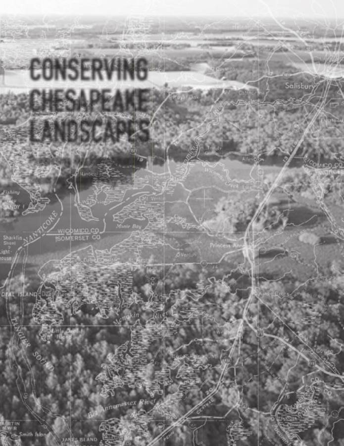
A REPORT BY THE CHESAPEAKE BAY COMMISSION AND CHESAPEAKE CONSERVANCY
CONSERVING
CHESAPEAKE
LANDSCAPES
Protecting Our Investments,
Securing Future Progress

“How we treat the land profoundly influences the quality of the water. Thus,
land-use decisions may well be the most important factor in the success
or failure of our efforts to restore and protect the Chesapeake Bay.”
KEEPING OUR COMMITMENT: PRESERVING LAND IN THE CHESAPEAKE WATERSHED, FEBRUARY 2001
INTRODUCTION Lands of the Chesapeake Watershed
2
PART 1 The Last Decade of Land Conservation
6
PART 2 Goals for the New Decade
9
PART 3 The State of Land Conservation —
Key Players & New Tools
12
PART 4 Regional Strategies — Charting Our Course
16
1. Focus on Working Lands
17
2. Maximize Water Quality Benefi ts
20
3. Enhance Public Access
22
4. Strengthen State, Local & Non-Profi t Programs 24
5. Expand Federal Land Conservation Investments 26
6. Support the Emerging Role of the Private Sector 29
PART 5 State Programs — Current Best Programs
& Enhancement Opportunities
32
Maryland
33
Pennsylvania
35
Virginia
36
Our Advisors
38
CHESAPEAKE BAY COMMISSION
CHESAPEAKE CONSERVANCY
DECEMBER 2010
CONSERVING
CHESAPEAKE
LANDSCAPES
Protecting Our Investments,
Securing Future Progress
2
CONSERVING CHESAPEAKE LANDSCAPES
F
ew words in the lexicon of American
geography paint as many pictures as
“Chesapeake.” Grand Canyon, Big Sur and
Everglades all evoke certain images, but
in general they are limited to their spectacular
beauty. The pictures painted by Chesapeake
include not just images of the Bay’s many waters,
but of the great expanse of surrounding lands and
the rich tapestry of history, traditions and cultures
contained therein.
Watermen unload bushels of crabs from boats
docked in small fishing villages; Amish farmers
steer buggies onto stone bridges over streams
that wind through carefully kept and produc-
tive farms; fly fishermen cast in expansive rivers
that start as countless creeks in far-away forested
hollows; hikers traverse mountain landscapes that
include the world’s largest stands of mature mixed
hardwoods; farmers work landscapes of rolling
meadows, pastures, and croplands dotted with
barns and tall, narrow farmhouses; sailors trim
white sails while kayakers and other boaters enjoy
the shimmering waters; forests, marshes and long
sweeps of undeveloped shorelines remind visitors
of rich Native American cultures that flourished
long ago, while tourists explore an abundance
of hallowed historic battlefields scattered across
INTRODUCTION
Lands of the
Chesapeake
Watershed
PROTECTING OUR INVESTMENTS, SECURING FUTURE PROGRESS
3
the region. These are among the many images
conjured up by the place we call Chesapeake.
The lands of the Chesapeake hold the key to the
environmental health and economic well-being of
our region. The Bay’s land-to-water ratio — 2,800
square meters of land to every one cubic meter
of water — is the largest of any coastal body in
the world. How we use and protect these lands
is the single most profound factor affecting the
Bay’s water quality, the 110,000 miles of creeks
and rivers flowing into it, the myriad of living
resources that depend on it, and the quality of life
of the 17 million people who live around it.
The purpose of this report is to promote
and accelerate the progress we are making in
conserving the Bay’s lands. It builds on the 2001
Commission Report Keeping Our Commitment:
Preserving Land in the Chesapeake Watershed,
originally published to help meet the goal of the
2000 Chesapeake Bay Agreement to permanently
preserve from development 20 percent of the
land area in the watershed by 2010. Federal,
state and local governments, private landowners
and non-profit organizations rallied over the
past decade to achieve the 2000 Agreement
conservation acreage goal, setting the stage for
new land conservation goals.
This report examines the status of current land
conservation programs and policies, and sets
✔
The Process
Conserving Chesapeake Landscapes
was prepared by the Chesapeake Bay
Commission (CBC) in partnership with the
Chesapeake Conservancy. Together, these
two organizations pooled their financial
resources, networks and knowledge to craft
the recommendations and actions offered in
this report.
Land conservation is increasingly complex,
requiring a multitude of partners operating
from various vantage points to be successful.
The report required the full expertise of a
diverse Advisory Panel who, in turn, created
three focus groups of subject matter
experts to further inform the report and fill
knowledge gaps. We have listed below all
those who advised our effort.
In particular, we wish to thank our project
advisors, Bill Matuszeski and David Burke.
Both men brought an extraordinary depth of
knowledge to the table. We also must thank
the National Park Service, the Keith Campbell
Foundation, the National Fish and Wildlife
Foundation and the Chesapeake Bay Trust,
whose financial support helped to make this
project both doable and timely.
PHOTO: Shenandoah Valley, Va., by Jillian Chilson
4
CONSERVING CHESAPEAKE LANDSCAPES
forth a series of specific recommendations for
achieving new Chesapeake land conservation
goals. The recommendations flow from three
critical approaches for the watershed. They are:
1. Maintain State Conservation Programs
with the Federal Government Investing
More.
States should attempt to maintain their
land conservation pace, while the federal
government should invest more in Chesapeake
land conservation. The states should attempt
to maintain the same pace of permanently
protecting land as in the last 10 years, especially
large contiguous working landscapes. This will
require a renewal of funding levels to at least
their historic levels as the economy improves.
This may necessitate a strategy where funding
levels remain depressed for a short period due
to the fiscal climate, and then accelerate to
higher than historic levels in order to make up
for the slow initial pace. In addition, the federal
government must substantially expand its
overall commitment to land conservation in the
Chesapeake region by increasing the amount of
funding it provides through various programs
and better coordinating federal conservation
programs with land conservation goals in the
Chesapeake.
2. Sustain Local Programs, Explore New
Options.
Local governments should continue
to develop and evolve their land conservation
programs based on best practices from across
the watershed. Existing local programs should
attempt to maintain their land conservation
pace during this fiscally difficult period.
Localities that lack dedicated funding or other
tools to conserve working lands and open
spaces should recognize the importance of land
conservation to their local economies and their
quality of life. In turn, they should establish new
programs that build from other successful local
conservation initiatives across the watershed.
3. Unleash the Potential of Ecosystem
Markets.
The Chesapeake region should work
together to proactively establish, enable and
support new market-based mechanisms that
contribute to the funding of land conservation
activities. These include nutrient, water and
carbon trading programs, as well as offset
mitigation banks to protect wetlands, stream
banks, species and other ecological attributes.
Many of these mechanisms are in various
stages of development today; Pennsylvania
and Virginia, for example have initiated and
are further refining their nutrient trading
programs that have been in effect for several
years. Similar programs are being tested in
Maryland as well. These mechanisms need to
grow and flourish and, if they are unified and
standardized across the Bay region, could
create a larger and more effective multi-state
market.
✔
What Is ‘Permanently
Preserved?’
In 2000, the Chesapeake Bay Program
partners agreed that land is permanently
preserved from development with a
perpetual conservation or open space
easement or fee simple ownership, held
by a federal, state or local government or
nonprofit organization for natural resource,
forestry, agriculture, wildlife, recreation,
historic, cultural or open space use, or to
sustain water quality and living resource
values. This definition still stands.
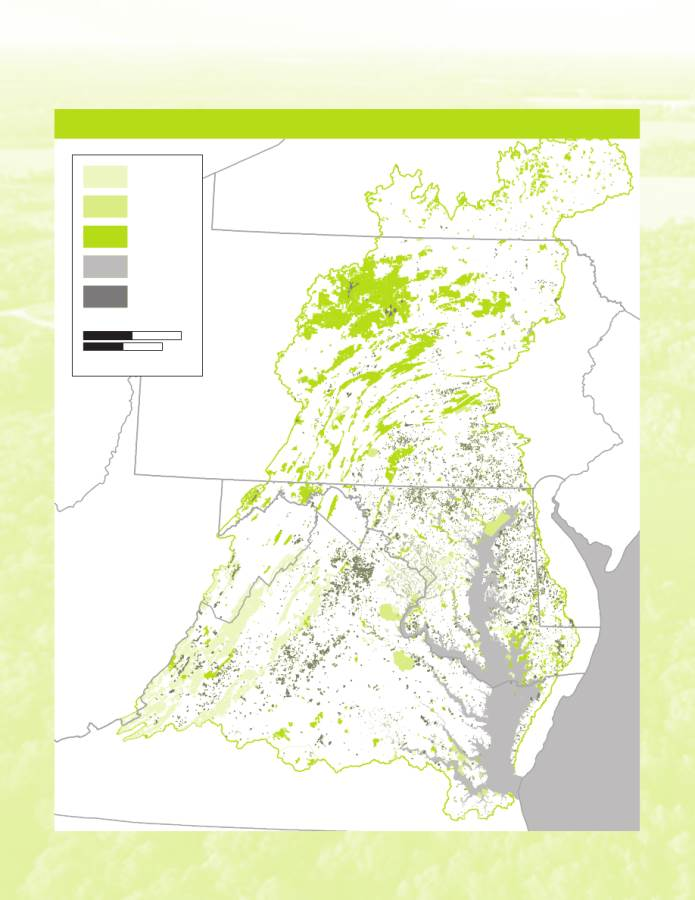
��������
��������
������������
��������
��������
����
��������
����
�������
��������
�����
�����
�������
�������������������������������������������������������������������������
������������������������������������������������������������������������
����������������������������������������������������������������
�����������������������������������
�������������������������������������������������
�
�����
��
�
�����
���
PROTECTING OUR INVESTMENTS, SECURING FUTURE PROGRESS
5
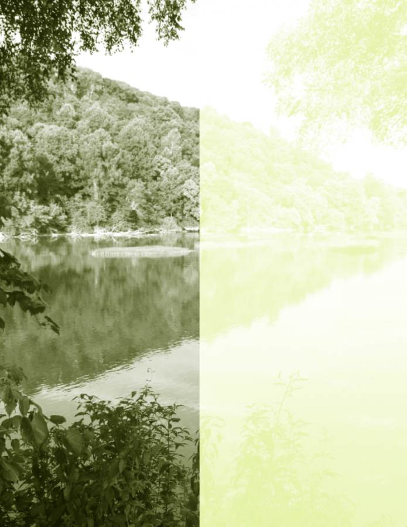
ACHIEVING THE 2010 BAY
LAND CONSERVATION GOAL
O
n June 28, 2000, the Chesapeake Executive
Council signed a new agreement for the resto-
ration of the Bay, entitled Chesapeake 2000.
Unprecedented in scope and complexity, the new accord
called for a range of actions, most with specifi c goals
and a timeframe of 2010 for completion. While many
of the goals were related to the Bay’s water quality
improvements, others dealt with the need for healthy
and productive natural systems throughout the 64,000
square mile watershed. Among the most important means
to achieve the goals is the permanent protection of open
lands, including farms, forests and wetlands.
One specifi c goal of Chesapeake 2000 was to perma-
nently protect 20 percent of the land area of the watershed
in the signatory jurisdictions — Maryland, Pennsylvania,
Virginia and the District of Columbia — by 2010. To place
the magnitude of this goal in perspective, about 58 percent
of the Bay watershed is undeveloped and primarily forest
lands, with the remainder in agriculture, urban, suburban
and other uses. (See Figure 1).
As with all goals, it is important to establish a baseline
and to defi ne terms in order to accurately measure prog-
ress. With this in mind, the Chesapeake Bay Commission
and the Trust for Public Lands published a report in 2001,
Keeping Our Commitment: Preserving Land in the Chesa-
peake Watershed. This report, produced in cooperation
with federal agencies, the Bay states and private groups,
used Chesapeake Bay Program data to set land protection
baselines for the three states and the District of Columbia.
Over the course of the decade, progress toward the
goal was tracked. In some years, funds were widely
available, while in other years progress was limited by
budget constraints. Patterns among the states emerged as
Virginia committed to securing conservation easements
and purchasing large blocks of land under state bond
initiatives; Maryland emphasized purchases of land under
Program Open Space and donated easements through the
Maryland Environmental Trust; and Pennsylvania grew its
extensive farmland preservation programs.
Along the way to 2010, additional goals boosted
progress. In 2006, Governor Kaine of Virginia established
a goal of conserving 400,000 acres in the Commonwealth
during the four years of his administration. In 2006,
the Chesapeake Executive Council adopted a new goal
to preserve an additional 695,000 acres of high quality
forests by 2020. Of note, this new forest preservation goal
PART 1
The Last
Decade
Of Land
Conservation
PHOTO: Rappahannock River, Va., by Mary Porter, The Nature Conservancy
PART 1
The Last
Decade
Of Land
Conservation

PROTECTING OUR INVESTMENTS, SECURING FUTURE PROGRESS
7
is one of the few goals also adopted by the three upstream
states — Delaware, New York and West Virginia.
With the help of these new goals and strong state
and local programs and funding support, as well as
growing federal resources made available to the states,
by mid-2009, the 2010 land protection goal was met. For
Maryland, Pennsylvania and Virginia the 20 percent goal
translates, in updated Chesapeake Bay Program numbers,
to 6.80 million acres. By 2010, the three states had
preserved 7.26 million acres, exceeding the goal by more
than 450,000 acres (Figure 2).
BENEFITS OF LAND CONSERVATION
H
istorically, land preservation in the Bay has occurred
largely to protect open space, conserve wildlife
habitat and provide access for recreation. In the
last two decades, more tailored land protection
programs have also targeted protection of forest resources
and agricultural lands, as well as battlefields and other
historic lands. In recent years, a significant and growing
focus of land conservation in the Bay region has been to
protect the water quality of the Chesapeake itself.
The primary sources of the Bay’s poor water quality
are excess nutrients and sediment pollution, all of which
comes from the land: sewage, urban runoff, septic tank
leachate, excess fertilizer and runoff from agriculture,
eroding stream banks, even air-borne nitrogen that once
came from a tailpipe or from loose soil blowing off a field.
As a result, land conservation efforts provide tangible and
absolutely critical benefits in avoiding increased nutrient
and sediment loadings to the Bay’s waters from what they
would otherwise be if those lands were developed.
The filtering capacity of forests protects drinking water
supplies, and as the market for carbon and nutrient credits
grows in the Bay region, forests can serve as a revenue
source for local economies. Water and land trails create
recreation opportunities and enhance tourism economies,
while promoting healthy living. Significant preservation of
Revolutionary and Civil War battlefields creates cultural
and historic tourism destinations on which local econo-
mies rely. In all its forms, land conservation can shape
sustainable land use and development patterns and serve
���
�������������
���������������
���
�����
��
������
��������
���
�����������
��������
������������������������
�������������������
����������������������������������
����������
���������������������������
�
�����������������������������������������������
�
���������������
�
�
��������������������
������������������
�
�
�����
�
�������
���������������������
���������
����������
����������
��������
����������
�����
�������������
�����������
����������
��������
����������
�����
���������
�����������
����������
��������
����������
�����
������
�����������
����������
����������
����������
�����
��������������������������������������������������
�������������������������������������������������������������������������������������������������������������������������������������������������������������
�����������������������������������������������������������������������
8
CONSERVING CHESAPEAKE LANDSCAPES
to confine the adverse impacts of sprawl in scope and loca-
tion, making its impacts less costly to the public.
Growing evidence points to the local economic benefits
of conserving open space and working lands. New parks
increase the value of homes in their vicinity and enhance
the livability and quality of life of the communities in
which they are dedicated. Studies consistently report
that industries and other employers are drawn to the
Bay region because of the quality of life offered to their
employees. Often cited are opportunities for recreation
and the beauty of the countryside.
In these difficult fiscal times, political leaders may be
tempted to reduce or redirect conservation funding for
other purposes. Such thinking, however, does not factor
in the economic benefits of conservation outlined above.
Indeed, in 2009, facing similar fiscal challenges as the
Bay states, the New Jersey legislature considered not
authorizing a ballot initiative to fund its Green Acres
land conservation program. Fortunately, a cost-benefit
analysis turned the political tide. The analysis showed
that for every dollar the state invested in conservation,
10 dollars in economic value are generated. Certainly,
similar economic benefits would be the case in the Bay
states, too. With land values at an historic low, today Bay
states get a significant return from their land conservation
investments.
✔
Shifting Demographics Pose Conservation Risk . . . and Opportunity
The wave of Baby Boomers born between 1946 and 1964 is fast approaching retirement age and
accounts for a large portion of the growth among older age groups. According to the most recent
census projections, the age group from 45 to 64 will account for 25 percent of the U.S. population in
2020.
As the number of older Americans increases, this region will experience the largest number of
intergenerational transfers of family-owned forests and farms in history. This transition presents both
risks and opportunities for reaching our land conservation goals.
According to the 2007 Census of Agriculture, the fastest growing group of farm operators is those
65 years and older. In the Bay states, the majority of farmland is owned by those 55 years and older.
Significantly, in Virginia, Pennsylvania and Maryland almost ten percent of privately-owned forestland
is owned by those 75 years old and older, which indicates that ownership of these lands will likely
change in the next decade. In fact, Pennsylvania estimates that half of their 12 million acres of
privately held forestland will change hands within the next 22 years.
A potential risk of this upcoming transition is that economic pressures on younger people today may
increase the conversion of forests and farms into developed lands. On the other hand, recent studies
indicate that the emerging generation of landowners is more interested in and knowledgeable
about conservation than previous generations, and may present an opportunity to advance land
conservation.
This emerging situation suggests that we should redouble efforts to work with landowners and their
heirs on land transition and estate planning. We should increase our outreach efforts to property
owners in transition to better inform them of existing tools such as tax credits that provide economic
benefits to permanently conserve land. States should craft or reshape inheritance tax policies and
other programs to provide incentives for landowners to protect their land through intergenerational
transfers.
This exceptional window of opportunity deserves an equally unprecedented effort by land
professionals to maintain and preserve the Bay’s treasured natural and working landscapes.
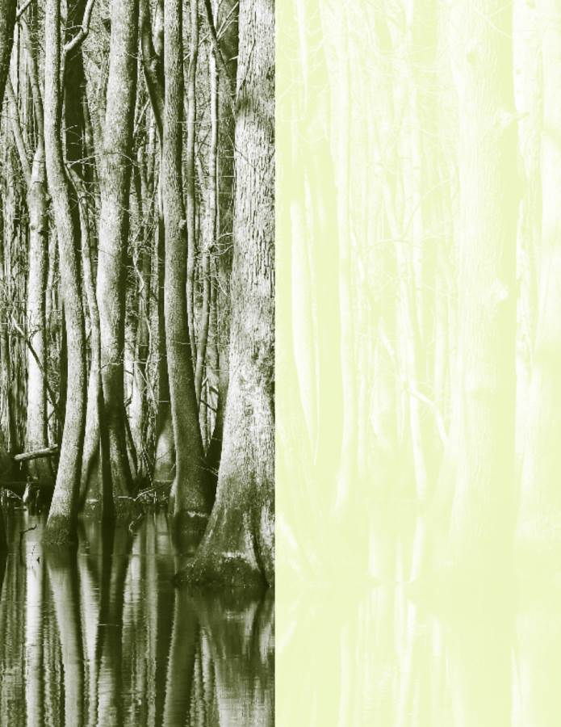
I
n 2009, President Barack Obama issued Executive
Order No. 13508 (EO) to promote Chesapeake
Bay protection and restoration. The order and the
implementation strategy that followed in May 2010
outline a number of initiatives that federal agencies
should take, including land conservation, to accelerate
the rate of progress to restore the Bay. Specifi cally, the EO
Strategy sets a goal to permanently protect an additional
two million acres by 2025. A related land use goal calls
for adding 300 public access sites along the Bay and its
rivers.
The federal two-million-acre land protection goal and
the 300-public-access-site goal were developed in consul-
tation with state offi cials. Each goal is built on existing
state priorities and past Chesapeake Bay Program goals
and accomplishments. For example, Virginia Governor
Robert McDonnell has set a new 400,000 acre goal for
the Commonwealth to be accomplished by the end of
his term in early 2014. Additionally, the 2006 Executive
Council goal to protect 695,000 acres of forest by 2020
has been folded into the broader two-million-acre goal.
Most importantly, the EO Strategy clearly recognizes that
achievement of both goals is dependent upon the collab-
orative efforts of federal, state and local governments,
non-governmental organizations and the private sector.
Each Bay state has existing and successful land conser-
vation programs and policies that will contribute to
reaching this new goal. For example, during the past
decade, Maryland, Pennsylvania, Virginia and the District
of Columbia achieved an average of 125,000 preserved
acres per year. If that level of success were to remain
constant for the next 16 years from 2010 to 2025, it is
feasible to reach the target of protecting two million acres.
In addition, land preservation efforts in the Bay watershed
portions of Delaware, New York and West Virginia, which
were not included in the previous 2010 goal will now be
counted under the new federal goal.
However, in the near term, states will likely have fewer
dollars for land conservation compared to the previous 10
years, which will create a signifi cant challenge to achieving
the new goal. The current pace of state land conservation
efforts relies heavily on state-funded programs, which are
increasingly under budget pressure and, in the current
fi scal climate, are not funded at previous levels. (See
Figure 3.)
In order to achieve even the former pace of land conser-
vation, federal land conservation programs, including the
Land and Water Conservation Fund and the Farm and
Ranch Lands Protection Program, must be fully funded.
Compared to the states, federal programs have funded
PART 2
Goals For
The New
Decade
PHOTO: Bald Cypress Swamp, Va., by Irvine Wilson, VA DCR Natural Heritage
PART 2
Goals For
The New
Decade
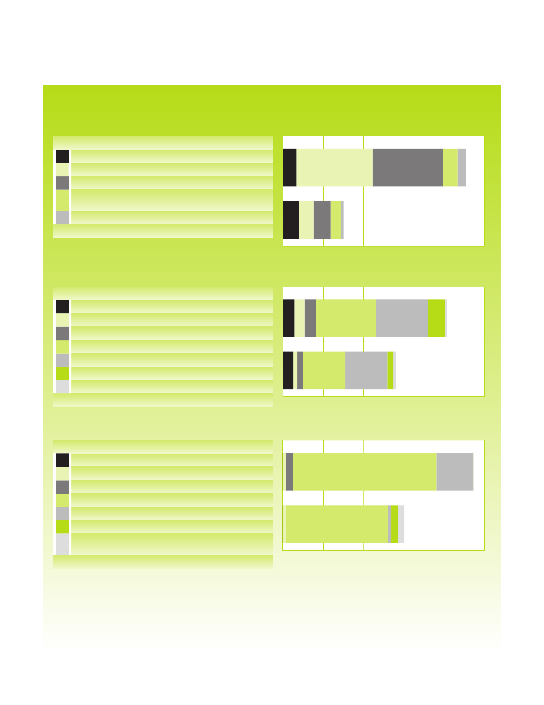
10
CONSERVING CHESAPEAKE LANDSCAPES
��������
������������������������������������������
�����������������������������������������������������
�
��������
�������
�������������
�������������
�����������
�����������������������������
�����������
����������
�������������������������
�����������
����������
����������������������������������������
�������������������������
�����������
����������
�������������������
�����������
���������
������
�������������
�����������
���������������������������������������������������������
�
��������
�������
������������������������
�����������
����������
���������������������
����������
���������
�����������������
����������
���������
����������������������
�����������
����������
�����������������������������
�����������
����������
���������������
�����������
���������
����������������
����������
���������
������
�������������
������������
������������������������������������������������������
�
��������
�������
������������������������������
���������
��������
��������������������������
����������
���������
���������������������������������
����������
�������
������������������������������
������������
������������
�������������������������������
�����������
���������
�����������������������������
��
���������
����������������������������
�����������������
��
���������
������
�������������
�����������
��������������������������������������
������������������������������������������������������������������������������
�
��
���
���
���
���
�������
�������
�
��
��
��
���
���
�������
�������
�
��
��
��
���
���
�������
�������
�������������������
�������������������
�������������������
PROTECTING OUR INVESTMENTS, SECURING FUTURE PROGRESS
11
only a fraction of the land conservation investments in the
watershed. (See Figure 4).
In addition to relying on traditional land conserva-
tion programs and strategies, achieving the new federal
goal can take advantage of the opportunities created by
the imposition of the Bay Total Maximum Daily Load
(TMDL), which sets pollution reduction targets under the
Clean Water Act. If current polluters subject to permits are
given TMDL targets that may be difficult to achieve, there
may be growth in the market for water quality credits.
These credits could be generated by placing additional
protections and environmental management measures
on agricultural and forest lands. The credits generated
by these actions on farms and forests could be sold to
permitted entities seeking pollution credits at a lower cost
than they would otherwise have to spend to reach their
reduction goals. The permanent protection of land could
be a by-product of these new markets since permanent
protection of the land makes it more likely that environ-
mental enhancements will remain in place over time and
continue to generate credits. See Recommendation Six of
this report for more on this subject.
In sum, while the two-million-acre goal is needed
and even feasible, most experts in the region believe that
attaining that goal by 2025
will be difficult. The greatest
challenge will be securing
increased levels of both
federal and state finan-
cial support in a difficult
economic climate. Local
government land conserva-
tion programs are under
similar fiscal constraints.
However, as public funding
declines or stagnates, there
is an increasingly important
opportunity for private
investors and other busi-
nesses involved in the
emerging ecosystem market-
place to engage in land
conservation. New private
sector initiatives, such as
nutrient and carbon trading
and other means of mone-
tizing the ecological value of
land conservation, should be
carefully and actively devel-
oped and supported.
Clearly, achieving the
new conservation goal will
require engagement of the
private sector, new programs,
creative financing and an
even greater level of federal,
state and local cooperation
that has yet to be realized in
the Chesapeake region.
���������
����������������������������������������
�
�������������������������������
���������������������������������������������������������������������������������������������
����������������
�������� �������� �������� �������
���������������������������������������������
�
�����������������������������
�����
�����
�����
����
�
���������������������
�
�
�����
�����
�����
����
�
������������������������������������
�����
�����
�����
����
�
�
���������
������
������
������
�����
�������������������������������������������������
�����
�����
�����
����
����������������������������������������������
��
�����
�����
����
��������������
�
�
�
��
��
�
�
���������
�����
�����
�����
����
�
���������
�����
�����
�����
����
�
���������
�����
�����
�����
����
�
�������������
�����
�����
�����
����
�
���������
�����
�����
�����
����
�
��������������
�����
�����
�����
����
�
���������������������
�����
�����
�����
����
�
�
���������
�����
�����
�����
����
�������������������
��
��
��
�
�
�������������������������������������
�
�
����
�����
���������
��
�
������������������������
����������
�
����
����
������
��
�
�
���������
�����
������
������
��
���������������������������������������������������
�����
�����
�����
����
����������������������������
������
������
������
�����
�����������������������������������������������������������������������������
���������������������������������������
���������������������������������������������������������������������������������������������������������������
��������������������������������������������������������������������������������������������������������������������������������������������
�������������������������������������������������������������������
�����������������������������������������������������������������������������������������������������������������������������������
����������������������������������������
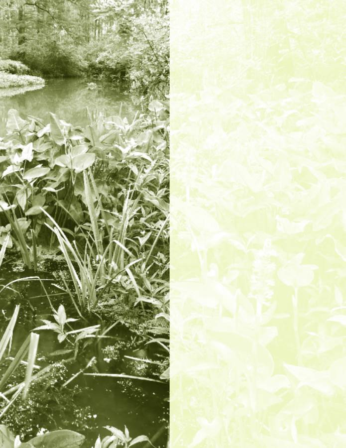
THE STATE OF LAND CONSERVATION
A
n array of tools has been used to protect many
types of land throughout the Bay region. Today,
fee simple purchases and conservation easements
are being complemented with new tools, such as
purchase of development rights and installment purchase
programs, designed to conserve still more acreage. New
entrepreneurial players are using tools to join the efforts
of existing conservation groups. A rich variety of lands
ranging from agricultural and forest lands to wetlands and
historic sites to archeological and cultural landscapes have
been targeted by different programs. A range of priorities,
from water quality to preserving working landscapes, is
now driving conservation decision making.
Extensive forests blanket the upper reaches of the
watershed, many of which are publicly owned (generally
under state ownership in Maryland and Pennsylvania
and federal ownership in Virginia), refl ecting the strong
acquisition priority of the last century. However, in recent
years, very little forest acreage has been acquired or
placed under easement since publicly funded programs
have focused elsewhere. In fact, for the past decade
across Maryland, Pennsylvania and Virginia, 2.9 acres
of agricultural land have been conserved by the states for
every one acre of forest land (See Figure 5). Even though
many of these agricultural acres include woodlots, it
illustrates the region’s profound reliance on the farmer
to preserve the Chesapeake landscape. Much of this
conserved agricultural land is in regions of high nutrient
loadings — the Lower Susquehanna, the Virginia
Piedmont and the Eastern Shore of Maryland — providing
opportunities for enhanced management practices to
reduce loadings to the Bay’s waters.
There is now a wide range of state programs designed
to keep farms and forests economically viable in the
watershed. This is one area that would benefi t from
even higher levels of collaboration between state and
federal agencies and private entities. One example is
Pennsylvania’s Woodnet Program. This multi-partner
initiative markets local wood products and networks local
mill owners, woodlot owners and artisans. The South
Mountain region, located within the Bay watershed, now
generates a more reliable income for forestland owners,
thereby keeping their lands in forest.
The protection of lands of high ecological value
— wetlands, buffers, riparian and wildlife corridors
— remains a priority of existing public programs most
interested in protecting water quality and fi sh and
wildlife habitat. At the same time, restoring abandoned
PART 3
The State
Of Land
Conservation
— Key Players
& New Tools
PHOTO: Dragon Run, Va., by Justin Black, The Nature Conservancy
PART 3
The State
Of Land
Conservation
— Key Players
& New Tools
PROTECTING OUR INVESTMENTS, SECURING FUTURE PROGRESS
13
or underutilized farmland, reclaimed
mined areas and other deteriorated
areas is a growing focus of an
emerging private sector market
seeking to establish mitigation banks
and generate offset credits. The
growth of these entities is being driven
by increased enforcement of permits
to reduce pollution entering streams
and rivers or to protect wetlands
or endangered species habitat. This
opens up another important area
of collaboration between public
land conservation agencies and the
emerging private entities engaged in
this work.
Another evolving aspect of land
conservation involves sea level rise
and climate change. In certain parts
of the Chesapeake, sea level rise is
affecting shorelines, wetlands and
other natural systems that protect
water quality and wildlife habitat.
Conservation strategies that take
sea level rise into account can help
protect communities and make
natural systems more resilient. Each
state is required to produce a state
Climate Change Adaptation Plan to
remain eligible for multiple federal
grant programs. States are using this
charge to rethink land conservation
strategies that incorporate adaptive management in order
to conserve wildlife migration corridors, fish and wildlife
habitats and important community buffer zones.
Still others are interested in conserving lands that have
recreational, historic or cultural values. Much of this work
takes place in the more developed parts of the region.
Here, collaboration among a wide range of stakeholders,
including land trusts and localities, is key to identifying
potential parcels, educating landowners and successfully
conserving priority lands.
While it is difficult to choose priorities among this array
of objectives, the conservation of high-value forest and
other ecologically valuable lands has the greatest water
quality benefit per acre, both locally and for the Bay. The
area of perhaps greatest opportunity relative to water
quality is the conservation of agricultural lands with best
management practices, especially if a strong market for
credits and trading with point sources of pollution can be
established.
The most critical element in achieving the 2025 land
conservation goal is for all land protection agencies and
programs to collaborate and take stock of changing priori-
ties and the emergence of new land protection tools and
players.
KEY PLAYERS
A
lthough the federal government set the two-million-
acre goal, federal agencies realistically will not likely
take on the bulk of the responsibility for actions
needed to achieve the goal. The EO strategy does
call for efforts to examine such concepts as establishing
a Chesapeake Bay unit of the National Park system and
expanding federal wildlife refuge areas, protected land
around Department of Defense facilities and in National
Forests. But overall, the major role seen for the federal
government is as a source of substantially expanded funds
through: full funding of the Federal Land and Water
Conservation Fund and increasing the proportion of these
funds available to the states; more efficient use of existing
funding sources such as agriculture and forest conserva-
tion programs; and creation of new or expanded funds.
����������
�����������������������������������
�
��
������������
�
������������
�������������
�����������
���������
������
�������
���������
���������
�������������������
����
�������
������
��������������������������������
������
������
�����
���������������������������������
����
��
���
������������������������
�
�
����
������
�����
���������
�������������������
����
�������
������
��������������������������������
������
����
�����
���������������������������������
����
����
���
�������������������������
����
�������
������
�������������
�������������������
����
�������
������
��������������������������������
�����
�
�
���
�����
���������������������������������
����
���
���
����������������������������������������������������������������������������������������������������������������������������
���������������������������������������
������������������������������������������������������������������������������������������������������������������������������
������
�������������������������
����������������
�������������������������������������������������������������������������������
�
�
14
CONSERVING CHESAPEAKE LANDSCAPES
For example, the federal Forest
Legacy Program should be
expanded because today it is
not meeting demand for forest
conservation easements.
State governments have
borne a large share of the
land preservation efforts that
contributed toward the 20
percent land protection goal.
The states will have to continue
that leadership role to attain the
2025 goal. There is a wide range
of programs in each state that
support both the previous and
new goals. Maryland established
a real estate transfer tax in
1969 as a dedicated funding
source that now supports
agricultural and natural
resource conservation, recreation and parks, and historic
preservation programs. Pennsylvania’s Agricultural
Conservation Easement Purchase Program was established
in 1988 and leads the nation in the amount of farmland
acreage protected. As of October 2009, the program has
protected over 2,000 farms in the watershed and more
than 4,000 statewide. Virginia has developed a very
effective program backed up by over $100 million in tax
incentives each year including transferable tax credits,
which has protected over 500,000 acres.
Importantly, each state will need to find ways to
fully fund and, where needed, expand these important
programs as we continue to recover from the current
economic situation. Above and beyond the states’ own
funding, all of the state programs are going to need more
federal funding support simply to maintain the same level
of effort reached over the previous 10 years.
Local governments have also been active and remain
critical to reaching the new two-million-acre goal. A
number of Maryland counties have developed and
operated their own land preservation programs for
decades, with impressive results. Several Pennsylvania
townships have their own open space acquisition bonds
and other programs, and the counties play a critical role
in the Commonwealth’s agriculture preservation effort.
Localities in Virginia have also started developing their
own land preservation programs, and are increasingly
partnering with state and federal agencies to leverage local
funds.
Non-profit land trusts have been active for many years
acquiring easements and working with landowners.
Although private grants and
donations have decreased due
to the recession, the long-term
expectation is that funding
from these NGOs with inter-
ests ranging from ecological to
historic, cultural and archeo-
logical, will only grow in
importance in the future. As
government reliance grows, the
capacity of these private land
trusts must be supported and
built up.
Newer to the land
conservation game,
Timberland Investment
Management Organizations
(TIMOs) and Real Estate
Investment Trusts (REITs)
are playing an increasing role
in forestland conservation in the Bay watershed. REITs
purchase timberland while TIMOs manage the forests
for financial returns on behalf of their owners. Both are
independent investors that together buy, manage and sell
forestland on behalf of large investors, such as corporate
pension funds. Recently, two major conservation
easements were negotiated by The Nature Conservancy
and several TIMOs in Virginia and Pennsylvania.
Covering more than 20 square miles of forestland in the
Dragon Run and Mattaponi watersheds, one easement,
the largest recorded to date in Virginia, protects 13,350
acres. The other is in the heart of the Pennsylvania Wilds
region in the headwaters of the Bay watershed, and
protects 9,500 acres of ecologically and economically
important forestland in Elk County.
The for-profit sector role is the newest and fastest
growing among the land conservation players. Private
sector businesses are just beginning to develop opportuni-
ties around emerging trading and offset programs related
in large part to state and federal regulatory programs that
protect streams, wetlands and wildlife. Nutrient trading
programs in Virginia, Maryland and Pennsylvania are in
varying stages of development. Carbon trading to protect
forests is being developed in Pennsylvania, and mitigation
banks for the protection of wetlands have been established
as well.
How these private enterprises will grow and what
role they will play in achieving the land protection goal
remains to be seen. The collaboration of private firms
with public natural resource agencies will determine their
success.
✔
Want More?
Please visit our website www.chesbay.
virginia.gov to read about three case
studies on:
■
Innovative local government
preservation techniques
■
A tri-state historical & cultural
conservation corridor; and
■
America’s largest state agricultural
conservation easement program

PROTECTING OUR INVESTMENTS, SECURING FUTURE PROGRESS
15
NEW TOOLS
F
or many years, the primary land preservation tool of
government was the full title or fee simple purchase
of land from the owner. This type of transaction was
popular for decades with land managers because it
gave public agencies full control to manage the land for
the public interest and often allowed for citizen access
to the land. Outright acquisition of land is still impor-
tant, but a far greater number of acres are now protected
through the use of conservation easements, which provide
more limited public access.
Over time, first with non-profit conservancies and
then with government agencies, the advantages of
conserving some land that remains in private ownership
became obvious as the costs of maintaining and acquiring
land grew. Today, most land preservation is carried
out through acquisition of a conservation easement or
other forms of transferring development rights, where
the landowner maintains ownership but either sells
or donates their rights to develop the property. This is
especially prevalent in working landscape conservation
programs that seek to protect agricultural lands or
forests.
Tax incentives have emerged as another major financial
aid for landowners who participate in land preservation
programs. The wide use of donated conservation
easements has been influenced by federal and state tax
benefits to landowners, generally in the form of sizeable
tax deductions or credits. Local tax benefits vary, but in
general, a landowner under an easement is taxed only on
the lower value of the remaining property rights.
As private, non-profit land conservation organizations
and government agencies have become more sophisti-
cated in real estate finance, there has been a growth of
innovation and tools to make conservation of lands more
attractive to the owner and affordable to the purchaser.
These include installment purchases, use of municipal
or state bond authorities to raise money, programs to
purchase and sell development rights, and creative use of
zoning. Land conservation programs in Virginia, Mary-
land and Pennsylvania grew more complex throughout
the 2000 to 2010 time period. Now the states can learn
from one another and apply these lessons to create a truly
comprehensive approach to land conservation in their own
jurisdiction (see Part 5).
The next wave of new land preservation tools may
come largely from the private sector, in the forms of
businesses created to establish mitigation banks and offset
credits, and other innovative financial tools that capitalize
in part on private markets. These include nutrient or
pollution credit trading programs or various forms of
species or ecological mitigation banks that could lead to
restoration and protection of ecologically valuable land
areas. More and more private companies are launching
efforts to capture the economic values generated when
land is protected, potentially creating new means to fund
additional land protection.
This entire area of development — commonly referred
to as payments for ecological services (PES) — is in
its infancy and requires significant public and private
investment, a regulatory authority with geographic
breadth and the appropriate balance of policies and rules
to both enable the efficient functioning of these markets
while at the same time ensuring that pollution caps or land
conservation objectives are monitored and met.
Finally, conservation corridors along stream valleys
and the great rivers of the Chesapeake, including land and
water trails, greenways and cultural landscapes have been
used around the watershed to protect important linear
landscapes. They offer multiple benefits to improve water
quality; create nearby recreational opportunities; protect
wildlife and fisheries corridors; revitalize communities and
create cultural connectivity in urban and rural settings.
Land conservation corridors can be linked to form
regional networks and managed through public-private
partnerships among federal, state and local entities and
private landowners.
The Conservation Reserve Enhancement Program
(CREP) offers an excellent example of the benefits derived
from linking conservation efforts linearly, along corridors.
Vermont has used CREP to promote stream buffers and
other best management practices on farms and forests
that have water quality resource concerns, with a focus
on establishing contiguous corridors of protective stream
buffer vegetation. Vermont officials are also pursuing an
innovative river corridor management program that uses
both conservation easements and local zoning controls to
encourage natural river stability. The technique creates
broader protective buffers that allow streams to meander
within a calculated corridor width that accounts for the
likely adjustments a particular stream will make.
16
CONSERVING CHESAPEAKE LANDSCAPES
T
he six recommendations that follow are accompa-
nied by fi ndings and analysis, and specifi c actions
for implementation of the recommendations.
This background is provided to assist the reader in better
understanding the information gathered, and the views
shared by members of the Advisory Panel and participants
of the Focus Groups.
The recommendations should be viewed in total.
The order in which they are presented is not intended to
convey priority. The six regional recommendations are:
1. Focus on Working Lands
2. Maximize Water Quality Benefi ts
3. Enhance Public Access
4. Strengthen State, Local & Non-Profi t
Programs
5. Expand Federal Land Conservation
Investments
6. Support the Emerging Role of the Private
Sector
PART 4
Regional
Strategies
— Charting
Our Course
PHOTO: Blue Grosbeak, Rappahannock River Valley National Wildlife Refuge, Va., by Les Brooks, USFWS
PART 4
Regional
Strategies
— Charting
Our Course
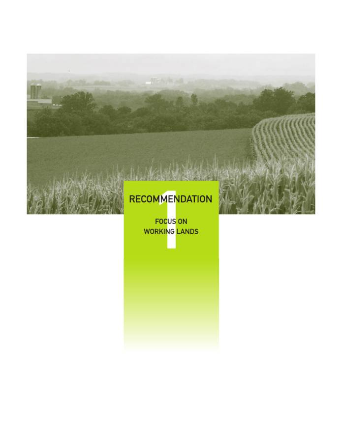
PROTECTING OUR INVESTMENTS, SECURING FUTURE PROGRESS
17
FINDINGS & ANALYSIS
I
t is no small challenge to identify
large tracts of high quality lands,
including 695,000 acres of high-
value forest lands, to achieve the
goals of permanently conserving two
million acres of additional land in the
watershed. Remaining unmanaged
forests are being fragmented and sold
off to numerous owners, making it
more difficult to accumulate large
parcels, contiguous lands and wildlife
corridors. Lands with high ecological
value such as stream buffers and
wetlands are the focus of both
regulation and assistance programs,
but they do not add up to a large
number of acres. Damaged lands (e.g.
reclaimed mine lands) that have the
potential to be restored may be more widespread, but the
programs to incentivize their conservation and restoration
through ecosystem service markets are not yet developed.
As a result, the most likely source for lands to conserve
are the millions of acres that comprise our existing farms
and managed forests, whose owners are coming under
economic pressure to either sell their land or allow the
land to go fallow. According to Penn
State University, over one million
acres of farmland have been aban-
doned in recent decades, and the
regional forest products industry has
fallen on hard times, causing many
mills to shut down, especially hard-
wood mills in Pennsylvania. Efforts
to preserve working farms and forest
lands will fail unless the economy
can support their long-term viability.
Our success in saving working
landscapes requires efforts to assure
that the farm and forest economies
along with the tens of thousands
of jobs they provide are supported
with adequate infrastructure, such
as roads, railroads and other means
to reach their traditional markets.
There must also be access to tech-
nical assistance and government support programs.
Otherwise, the fields will go fallow and the forests will go
unmanaged, neither of which provides the benefits to the
community or to water quality that come from environ-
mentally sound management of these landscapes.
More importantly, there must be appropriate land use
and zoning controls in place to retain strong, identifiable
States and localities should
continue and expand programs
and advance new policy initiatives
to conserve a critical mass of
well-managed working farms and
forests to ensure their economic
viability into the future.
PHO
TO:
Pennsylvania
Landscape
by
Gr
et
chen
Hoffman,
Amer
ican
Far
mland
Trust
18
CONSERVING CHESAPEAKE LANDSCAPES
clusters of working lands and
a volume of activity to assure
an economically viable service
support industry that provides
places to buy or rent equipment,
suppliers, and individuals with
connections to markets and
financial institutions.
The point is that there must
be a sense that there is now and
there will be for the long haul, a
structure of support for envi-
ronmentally responsible forestry
and farming in the community. In Lancaster County,
Pennsylvania, farmland adjacent to land under easement
costs more than acreage not yet conserved. This is because
there is assurance that the surrounding farms, also under
easements, will always be there to maintain a critical mass
to keep the support structure in place.
The Harry R. Hughes Center for Agro-Ecology in
Maryland presented well-researched recommendations
for tools to preserve local working lands. The research
supports the use of preferential agricultural use tax
assessments in combination with land transfer tax
rates that are high enough to discourage conversion of
agricultural land to development. The increased revenue
is then redistributed to local land conservation programs.
This combination provides a successful approach to slow
the conversion of farmland while supporting farming
activities.
Similarly, local government investment in working land
preservation, particularly in areas where such lands repre-
sent a significant economic contribution, yield important
public benefits at relatively low cost compared with tradi-
tional capital spending projects (e.g. road construction
and stormwater controls). Further, local government land
use controls that are designed to keep contiguous clusters
of working lands intact are essential to maintaining their
long-term economic viability.
A related and recent incentive that may improve the
economic viability of agricultural land is the emergence
of local markets for specialty products. Much of this has
to do with using part of the farmland to grow food for
local markets and restaurants. States and localities have
supported this with farmers markets and informational
programs to increase citizen awareness. As the buy local
movement gains in popularity along with programs to
improve the quality of food to deal with obesity in our
society, these efforts could expand and strengthen the
economic base of farming.
Similar efforts to promote the use of local timber and
non-timber products are underway in Pennsylvania,
including organizing local production and marketing of
ginseng, maple syrup, wood
crafts, and locally milled wood
products. Markets for using
wood chips and forest slash as
a fuel source for public build-
ings is another possibility. The
Pennsylvania Fuels for Schools
Program has been such a
success that it is being broad-
ened to support boiler retrofits
and other needs at a full range
of local and state public build-
ings. Also, generation of heat
and electricity from biomass is increasing in popularity for
on-farm and nearby use in the region.
Ultimately, if markets for cellulosic biofuel feedstocks
develop, both forests and farms will be able to benefit
from new sources of income — forests from thinning,
slash and chips and farms from switchgrass, corn stover
and fast-growing trees. In 2009, Pennsylvania published
one of the first guidance documents in the country on
sustainable development and harvesting of forest biomass
to ensure appropriate scale and environmental safeguards.
Finally, there is the tourism potential of having
preserved wide swaths of the countryside for active or
passive recreation. Scenic drives remain a major weekend
activity for urban dwellers. Programs to allow public
access for fishing, swimming and other water-based recre-
ation are being developed consistent with landowner needs
and desires along water trails. As more and more open
lands become protected, and as more and more of those
are prosperous working lands, the result can be investment
in the local tourism economy. The 2006 U.S. Fish and
Wildlife Service Survey of Fishing, Hunting and Wildlife-
Associated Recreation cites combined annual incomes for
fishing, hunting and wildlife watching activities and travel
as: $1.6 billion for Maryland; $2.4 billion for Virginia;
and $5.4 billion for Pennsylvania.
ACTIONS
■
Establish a Differential Land Transfer Tax Rate to
Encourage Local Conservation.
States and localities
should establish higher agricultural land transfer tax
rates, where such taxes exist, for farms converted to
development. The resulting revenue should be allocated
to local forest and farmland preservation programs.
This could be enhanced with creation of a state-level
dedicated fund to apportion the development tax
proceeds equitably to all rural areas.
■
Dedicate Operating Funds to Conserve Working
Lands.
Local governments should dedicate funding
✔
Want More?
Please visit www.chesbay.virginia.gov
to learn about conserving a nationally
significant 175-mile corridor that
traverses the historic landscape of our
three Bay states.
PROTECTING OUR INVESTMENTS, SECURING FUTURE PROGRESS
19
in their annual operating budgets for the conserva-
tion of working farms and forests at a rate that refl ects
the economic signifi cance of these industries in their
communities. For instance, on Maryland’s Eastern
Shore, the Eastern Shore Land Conservancy recom-
mends local governments commit at least 1.5 percent of
their annual operating budgets for land conservation to
support traditional economies.
■
Integrate Agriculture and Forestry into Regional
Economic Development Strategies and Local Ordi-
nances.
State, regional and local business development
agencies should encourage the retention and growth
of resource-based businesses — farming and forestry
— in their economic development strategies. Support
should include regional branding efforts; help identi-
fying emerging market opportunities including the use
of biomass and biofuels for alternative energy produc-
tion; and promotion of local and regional outlets for
farm and forest products. Many codes and ordinances
lack sensitivity to the changes in agriculture and forest
products and should be reviewed and revised to support
greater growth opportunities.
■
Ensure Planning and Zoning Policies Support the
Long-Term Conservation of Working Lands.
While
planning and zoning practices cannot alone assure the
needed level and extent of open land conservation, they
can help to prevent the acceleration of land values in
response to development pressure. Underlying zoning
densities and permitted land uses should be structured
to encourage the right to farm and discourage incom-
patible uses. Full accounting of the costs and benefi ts
to taxpayers of different land uses should be researched
and taken into account.
■
Build the Heritage-Tourism Potential of Open Lands
and Towns.
State, regional and local agencies should
work together to promote tourism that connects
preserved open spaces with water and land trails and
the resources of neighboring towns. Agencies should
also ensure that on-farm, tourist-related activities are
permissible to the extent possible under conservation
agreements and local ordinances.
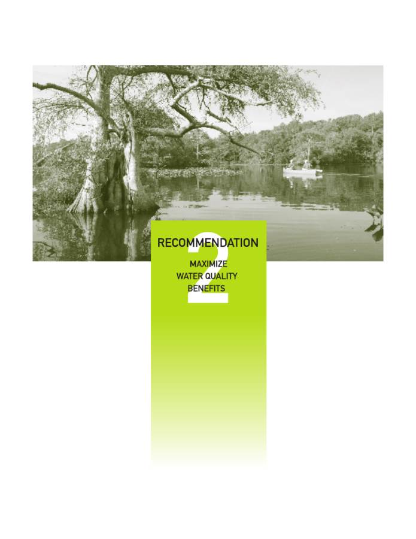
20
CONSERVING CHESAPEAKE LANDSCAPES
FINDINGS & ANALYSIS
A
n emerging priority for land
protection programs in the Bay
region is to protect land from
being developed in order to
protect local and Bay water quality.
The rationale is that developed land,
with its extensive roads, parking lots,
roofs and subdivisions, increases the
flow of runoff and impairs natural
stream courses. Development also
brings sewers or septic systems that
add to the loadings of nutrients to the
receiving waters.
However, not all undeveloped
lands provide the same benefits.
There is a clear difference in the
benefits derived from forest land
versus land in agriculture. Forest
cover absorbs nutrients effectively
and prevents them and sediment from
reaching streams. Agriculture is a less
clear case. Some even argue that the
cultivation of heavily fertilized row
crops such as corn and soybeans on farms where sound
environmental practices are not put on the ground are
worse for the Bay than developed
land.
In general, there is agreement that
a mix of forests and farms is better
for the Bay than the same acreage
developed as housing or businesses,
and that significant additional bene-
fits can be derived from employing a
variety of management practices on
working lands of all types. Simply
preserving agricultural land is only
the first step from a water quality
perspective. Farms that secure
conservation easements are required
in some states to take a number of
other conservation steps, with many
counties adding their own require-
ments. Yet, there is much more that
can be done to increase the return on
the conservation dollar by further
incentivizing land owners to increase
the use of conservation management
practices as well.
Such practices are well known and
include conservation plans, nutrient
management plans, cover crops, grass swales, forest or
grass stream buffers, stream fencing and other measures
Federal, state and local land
conservation programs should be
enhanced, to the extent feasible,
to yield greater long-term water
quality benefits through the
addition of requirements and
incentives for farmers and forest
owners to use best management
practices for preserved agricultural
and forested lands.
PHO
TO:
Nassa
wango
Cr
eek
, M
d.,
by
Alan
Eck
er
t,
The
Natur
e
Conser
vanc
y

PROTECTING OUR INVESTMENTS, SECURING FUTURE PROGRESS
21
and best practices aimed at reducing runoff and retaining
soil and nutrients on the land. Conserving land through
best management practices can go well beyond simply
preventing the added impacts of development, and can
make important contributions to reducing pollution load-
ings to the Bay.
Based on our analysis of Chesapeake Bay Program
data, there is a large untapped potential for conserved
lands to contribute to the achievement of the Chesapeake
Bay pollution limits established under the Bay TMDL.
For example, if the new Bay region goal of two million
acres is achieved, and if the conservation of these acres is
targeted to those lands known to have the greatest infl u-
ence on main stem water quality, and in addition if BMPs
are applied to all these lands, the benefi ts could exceed
several million pounds of nitrogen per year. Moreover, the
Bay region has already conserved 7.3 million acres. Many
of these lands, with the addition of BMPs, could provide
substantial opportunities for water quality improvements.
Some management practices are already required on
lands subject to conservation efforts. For example, the
Pennsylvania Farm Land Preservation Program requires
each farm to have a conservation plan in place as a condi-
tion of the program. Also, Pennsylvania’s 2.2 million acres
of state forestlands must follow strict best management
practices to retain third-party certifi cation as sustainably
managed forests under the Forest Stewardship Council
program. All farms in Maryland are required to have
nutrient management plans. And for large transactions
involving over $1 million in tax credits under Virginia’s
land preservation tax credit program, water quality
criteria must be met.
ACTIONS
■
Target Land Conservation to Achieve Water Quality
Benefi ts.
To meet the Chesapeake land conservation
goal, forest land protection should be given greater
emphasis as forest is the most benefi cial land cover
for water quality with the least cost. Fortunately,
protection of forest lands can be effectively combined
with farmland protection efforts as there are over
three million acres of forests located on active farms in
the watershed. States should continue to develop and
utilize helpful GIS tools to identify priority landscapes
with the highest benefi t to water quality as well as
other natural resource benefi ts, such as Virginia’s
Land Conservation Needs Assessment and Maryland’s
GreenPrint.
■
Target Public Investment of Best Management
Practices to Permanently Preserved Lands.
Public
funds invested in BMPs should be targeted, to the
extent possible, to landowners who have conserved
their working farms and forests in perpetuity. This
will help to ensure long-term benefi ts from these
investments in water quality improvements for the Bay.
■
Integrate Agricultural Stewardship into Agreements
for Permanent Land Conservation.
Federal, state
and local governments and non-profi t organizations
engaged in programs to conserve farm lands should
establish a minimum level of management practices as
a condition of participation. The level should be set to
assure continued interest by landowners in permanent
conservation. Additional management practices can
then be provided through cost-share or credit and sale
programs.
■
Develop Next Generation Eco-Easements.
Chesapeake Bay Program scientists should work with
the conservation community and landowners to develop
the next generation of performance-based easements
to be used by states, local governments, land trusts and
others working with landowners. The effort should
result in a template that outlines new “eco-easements”
that would improve watershed health through a
variety of practices including: forest management
for nutrient reduction; stormwater management that
incorporates emerging technologies; and wetland
migration corridors that deal with increasing sea levels.
Eco-easements should allow for revisions over time,
in response to changes in our understanding of the
natural conditions. Obviously, continued monitoring
and cooperation of the landowners will be key. States
and land trusts should consider revisiting land owners
of older easements to encourage strengthening their
early easements with such performance-based practices,
which may be eligible for fi nancial assistance or tax
credits.
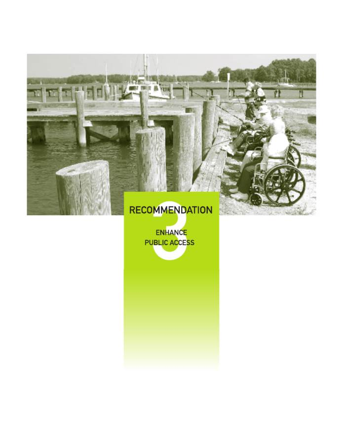
22
CONSERVING CHESAPEAKE LANDSCAPES
FINDINGS & ANALYSIS
P
ublic access to natural areas
such as rivers, trails and forests
allows the public to enjoy
and experience the lands and
special places that make up the Ches-
apeake. Such outdoor experiences
often inspire an appreciation for
nature and help to build support for
the permanent conservation of land
together with all its benefits. In fact,
few voter ballot initiatives can match
the public approval record of those
for open space and public access.
Yet public access, especially water
access in the Bay region, is limited
by the lack of public ownership, the
high cost of shoreline property, issues
of maintenance and liability, and
especially the weakness of long-term
planning for all forms of access.
This need not be the case. There are many ways to
accommodate public access to water and land as part
of the land conservation effort. One place to start is by
questioning the means by which water access goals are
traditionally set. Neither the Bay
Program goals nor the latest goal
established under the Executive
Order on the Chesapeake reflect
the reality that the quality and
location of access points are often
more important than their number.
Instead, Chesapeake public access
goals have focused on the number
of access points to the water — for
example, the Executive Order goal
is 300 new access points by 2025.
Counting the number of sites and
the percentage of shoreline that is
publicly accessible does not tell the
whole story.
Although new access points have
been added over the years, many of
these locations are difficult to reach,
of low quality or otherwise incon-
venient to use. Conversely, a single,
relatively small, but well positioned
site can provide adequate access to
the water. For example, the Pennsylvania Fish and Boat
Commission works with private landowners to obtain
permanent public fishing access easements along a 35-foot
corridor next to stream banks. The landowner enters into
Legislative, policy and
programmatic initiatives coupled
with landowner incentives and
volunteer actions are needed to
create new public access locations
that offer all citizens opportunities
to enjoy the Bay, its rivers, forests
and other natural features.
PHO
TO:
W
illiams
Whar
f,
V
a.,
by
Tim
Ulsak
er
, M
athe
ws
Land
Conser
vanc
y
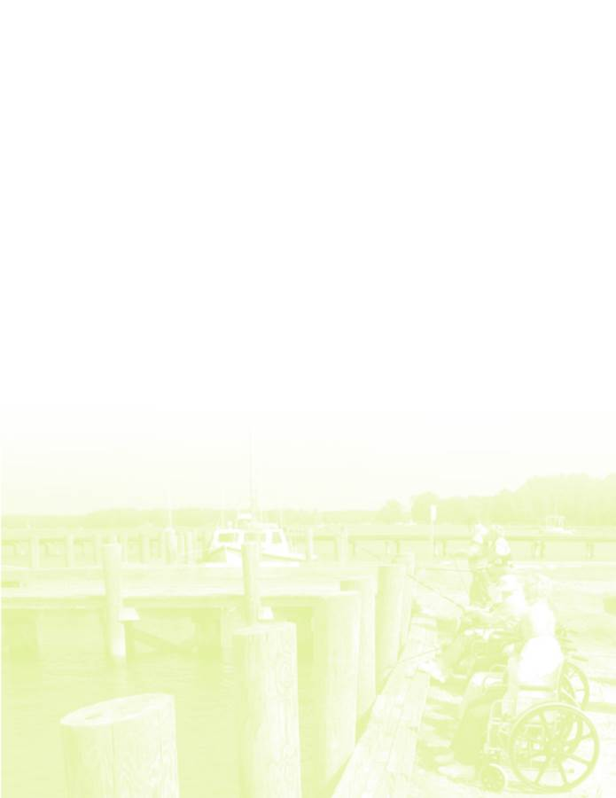
PROTECTING OUR INVESTMENTS, SECURING FUTURE PROGRESS
23
the easement contract voluntarily, continues to own and
control the land and receives payment for the easement
value. Since 2006, more than 15 sites have been secured
providing over 15 miles of access to fi shing grounds.
ACTIONS
■
Ensure that Land Conservation Eff orts Achieve an
Appropriate Balance Between Private Land Conser-
vation and the Acquisition of Public Lands.
As the
population of the Bay watershed grows, there is an
ever-growing need for more parks, wildlife refuges and
other government-owned lands that provide recre-
ational access to the public. Concurrently, holders of
conservation easements should seek opportunities to
include public access in conservation easements where
appropriate. States should also address the real or
perceived landowner liability issues that have been
barriers to landowners granting trail access in the past.
■
Set More Refi ned Access Goals for the Bay Water-
shed.
As the lead federal agency for public access under
the Bay Executive Order, the National Park Service
should convene representatives from federal, state and
local governments and the non-profi t sector to establish
next stage access goals that better refl ect the range of
access opportunities as well as current needs, such as
multi-purpose access along water trails.
■
Ensure the Next Transportation Reauthorization Bill
Promotes Recreation and Public Access to Waters.
During the federal highway act reauthorization process,
states should work with their Congressional delegations
to require that transportation plans and projects include
canoe, kayak and fi shing access at stream crossings and
to authorize funding as part of the project costs.
■
Enhance Voluntary Landowner Stewardship
Programs.
States should work in partnership with
private organizations to establish or expand voluntary
state programs to open private lands to recreational
access including hunting, fi shing and hiking. Assis-
tance should be sought from the U.S. Department of
Agriculture’s new Voluntary Public Access and Habitat
Protection Incentive Program.
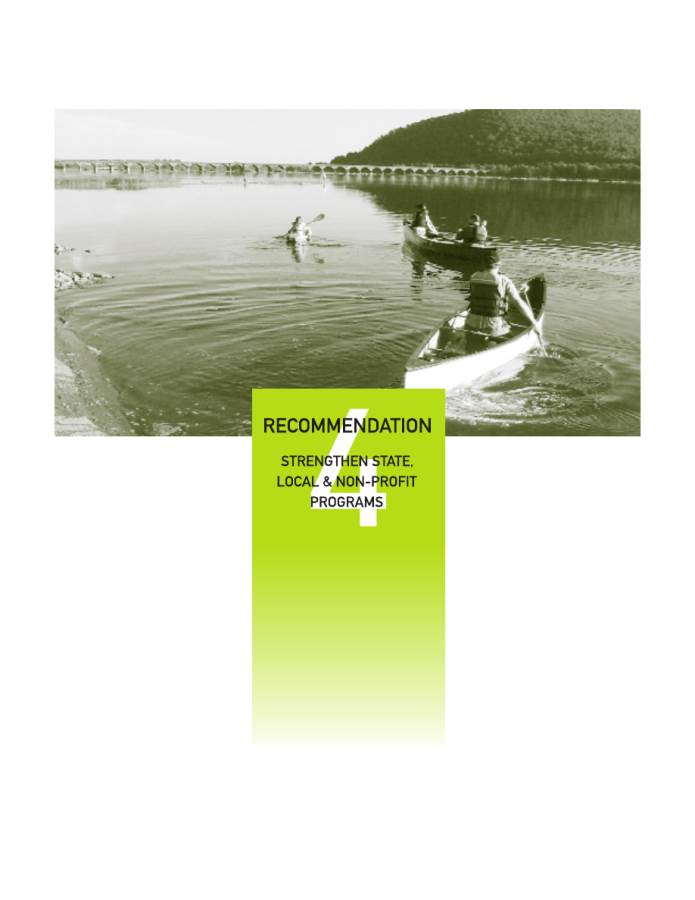
24
CONSERVING CHESAPEAKE LANDSCAPES
FINDINGS & ANALYSIS
T
here is a wide range of programs
managed by state and local
governments and private
conservation groups to preserve
open space in the region (noted in
Part 3 of this report and covered
in detail in the Commission’s 2001
report, Keeping Our Commitment:
Preserving Land in the Chesapeake
Watershed). While the purposes and
priorities of the various programs
differ, there is a fair level of coopera-
tion among the groups and a high
level of awareness of what each is
doing. At the same time, some of
the more innovative programs could
be adopted by other states or local
governments to great benefit in those
jurisdictions.
The three Bay region states benefit
from some of the most effective state land conservation
programs in the nation. Maryland’s Program Open Space
is a dedicated fund, financed by a real estate transfer tax,
which supports a set of state and county conservation
programs. These include conservation easement and land
trust assistance programs under the
Maryland Environmental Trust, state
and local recreation funding, the
Maryland Agricultural Land Preser-
vation Fund, and the Rural Legacy
Program that all support open lands
conservation.
A number of Maryland counties
have undertaken their own land
conservation programs. Baltimore
County has been targeting desirable
properties for conservation
easements with a priority selection
system developed with The
Conservation Fund. The county
uses a detailed planning process
and takes advantage of the state’s
Critical Areas Law and a variety
of Program Open Space options,
including the Rural Legacy Program.
Nearby Carroll County has relied
more on installment purchases and
has included a number of management measures as parts
of their agreements, including minimum 50-foot buffers
along streams.
Pennsylvania is said to have the finest agricultural
land preservation program in the country, with over
State and local governments should
diversify their land conservation
programs by offering a combination
of dedicated revenue sources,
tax incentives and market-driven
approaches, as well as participating
in programs to learn from each
other’s successes.
PHO
TO:
For
t Hunt
er
, P
a.,
by
Tr
ish
Car
others
, Susquehanna
Gr
een
wa
y
Par
tnership
PROTECTING OUR INVESTMENTS, SECURING FUTURE PROGRESS
25
4,000 farms permanently protected, of which 2,000 are
in the Chesapeake watershed. The program requires each
property to meet soils criteria, to have at least 50 percent
harvested cropland, pastureland or grazing land, and have
an approved Soil and Water Conservation Plan. Counties
play a key role in helping landowners enter the program
and in the required annual monitoring visits.
Local non-agricultural programs in Pennsylvania are
quite varied, in keeping with the local government struc-
ture, where, unlike Maryland and Virginia, substantial
powers are vested in townships, boroughs and other local
units that subdivide counties.
Some Pennsylvania communities are taking advantage
of bond fi nancing to accelerate land conservation efforts.
Bonds are used to facilitate immediate land or easement
purchases and to distribute costs over a long-term, fi xed
time period. Both revenue and general obligation (GO)
bonds can be used. GO bonds allow the government
to borrow secure funds with a commitment to timely
payments of principal and interest over a fi xed period of
years. Revenue bonds are paid by the proceeds from an
existing specialized tax or fee like a real estate transfer tax.
Virginia has protected over a half-million acres of
open space with easements and income tax credits. This
approach has become the Commonwealth’s primary
means of meeting both its own 400,000 acre goal and its
share of the broader Bay region goals. The state income
tax credits are set at 40 percent of the easement value and
can be taken over a period of years. The credits are trans-
ferable to other taxpayers, so they can be of particular
value to landowners who are land-rich and cash-poor,
which is the case with many farmers
Virginia has also enacted an enabling law to allow
groups of counties in the Chesapeake watershed to estab-
lish Public Access Authorities. These new authorities can
raise funds to acquire access for a wide range of public
uses. The Middle Peninsula counties were the fi rst to take
advantage of this law, followed by the Northern Neck.
Such coordinated efforts will help with the establishment
of a congruent set of access points as water trails gain in
popularity.
ACTIONS
■
Establish Dedicated Land Conservation Funds and
Provide Tax Credits.
States should establish both a
core, dedicated source of revenue and offer a range
of tax credits to encourage landowner participation.
Dedicated funds allow for long-term planning, setting
of priorities and purchasing both public lands and
easements. Substantial and transferable tax credits
use market forces to expand land conservation
opportunities, in particular by incentivizing the use of
easements. The combination of these tools provides
the greatest opportunity to enhance the quantity and
quality of conserved lands. In both cases, states should
provide adequate technical assistance and capacity
support so that all citizens and landowners, across
the economic spectrum, can actively participate in the
programs.
■
Use State and Local Bonding Authority for Land
Conservation.
Local governments that lack dedicated
preservation funds, and have experienced or anticipate
signifi cant losses of valuable conservation lands, should
consider bond fi nancing to facilitate land or easement
purchases. Bonds allow governments to capitalize
upon market sources of fi nancing. While the immediate
benefi t might be addressing short term needs, bonds can
be used to fi nance conservation over the long term.
■
Support Monitoring and Stewardship of Conser-
vation Easements.
Achieving the new Bay acreage
goals will require even greater reliance upon land
trusts as they secure and become holders of more and
more conservation easements. Federal, state and local
programs should support more effi cient, cost-effective
methods to monitor protected lands, as this is one of
the most important and expensive responsibilities that
easement holders undertake. GIS technology using the
very latest up-to-date aerial photography should be
utilized to enable widespread remote monitoring of
conservation easements.
■
Convert Federal Short-Term Agreements with
Farmers into Permanent Preservation Agreements.
Localities and other Bay states should emulate the
Maryland and Virginia programs to piggyback the
federally-funded Conservation Reserve Enhancement
Program (CREP) that pays farmers to improve and
protect ecologically sensitive areas. When the 10- to
15-year federal contracts fi nally conclude, the state
can offer to pay to convert the conservation acreage to
a permanent easement. Since it is essentially buying a
future set of use restrictions, the earlier the state acts in
the CREP period, the less expensive the easement.
✔
Want More?
Go to www.chesbay.virginia.gov to learn
more about two Maryland local conservation
eff orts and Pennsylvania’s agricultural
easement program.
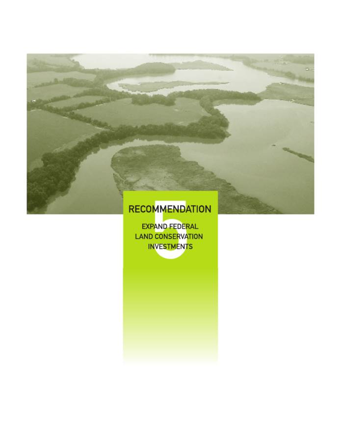
26
CONSERVING CHESAPEAKE LANDSCAPES
FINDINGS & ANALYSIS
T
he 20-percent land conservation
goal accomplished over the past
10 years was funded primarily
by state programs and private
conservation groups. The new federal
goal of two million acres, called for
in the Executive Order, relies on
nearly the same annual level of effort.
However, state budgets are now
under increasing pressures, and it is
highly unlikely that this same level
of effort can be supported for the
foreseeable future. This means that
the federal government will need to
fill the gap to meet the goal.
Fortunately, the President’s
Executive Order did not simply set a
two-million-acre goal. It also requires
that plans be developed to meet that
goal. There is opportunity, for example, to celebrate the
Chesapeake’s Great Rivers by designing Blueways Conser-
vation Corridors that complement the emerging national
water trails, support stewardship efforts under way in the
region and serve as a model federal-state-local partner-
ship for the Chesapeake and for the
nation. More fundamentally, the
order provides a catalyst for federal
agency action and attention to the
Bay overall, and in this specific case
to land conservation. In addition, the
U.S. Department of the Interior is in
the process of developing a renewed
land conservation program under the
heading America’s Great Outdoors.
To keep up the pace of the last 10
years, federal funds must be better
integrated among various federal
programs and with ongoing state
efforts and private conservation
groups. In some cases, such as those
programs funded by EPA and the
National Park Service, this involves
building on established program rela-
tionships. But there are challenges
and opportunities at the federal level
that require specific attention.
The primary source of federal funds for open space
remains the Land and Water Conservation Fund (LWCF)
in the Department of the Interior. In recent years, the
LWCF has received varied levels of appropriations; gener-
ally well below the authorized $900 million. In fiscal
Additional federal land
conservation funding, tax
deductions and tax credits for the
Chesapeake Bay watershed are
needed along with programmatic
changes aimed at making existing
programs more efficient and
effective.
PHO
TO:
C
at
Point
Cr
eek
, V
a.,
by
U
.S.
Fish
&
W
ildlif
e
Ser
vice

PROTECTING OUR INVESTMENTS, SECURING FUTURE PROGRESS
27
year 2011, the Administration requested full funding and
members of the Congress have called for a more equitable
split of the funds. Over the years, the tradition of allo-
cating half of the LWCF appropriation to the states has
been abandoned, with the vast majority of the funds going
to federal agencies. These funds support a range of federal
land conservation priorities, including the conservation of
critical ecological and cultural lands within National Parks
and Fish and Wildlife Refuges.
The Rappahannock River Valley National Wildlife
Refuge offers an excellent example of a LWCF funded
project. Established in 1996, the goal of the Refuge is to
protect 20,000 acres of wetlands and associated uplands
along the river and its major tributaries. As of May 2005,
a total of 7,711 acres has been purchased with LWCF
funds from willing sellers or donations by Refuge part-
ners, including 1,033 acres of conservation easements.
Importantly, the LWCF money can also be prioritized
to purchase in-holdings when boundaries of parks and
refuges are expanded.
A particularly important program for working lands in
the Bay region worthy of enhancement is the U.S. Depart-
ment of Agriculture’s Farm and Ranch Lands Protection
Program (FRPP) established under the Farm Bill. The
program funds easements to permanently protect farms. In
February 2010, the Secretaries of Agriculture of the north-
eastern states, including Maryland, Pennsylvania, New
York and Delaware, raised issues needing resolution in a
letter to the Department of Agriculture. Proposed changes
included simplifying certification of entities eligible to
negotiate conservation easements with farmers, and
streamlining documentation requirements. Also requested
were major changes or elimination of the USDA land
appraisal process, which can delay finalization of agree-
ments for up to six months, and easier eligibility criteria
for forestlands on farms. While changes in the 2008 Farm
Bill were supposed to make a difference in these and other
areas of the FRPP, the Secretaries conclude they have in
fact made things worse.
Another area of federal impact on the land conserva-
tion goals is the Internal Revenue Code. For several years,
donations of qualified easements for conservation or
historic purposes have been eligible for a deduction that
is larger than for other charitable donations — up to 50
percent of a taxpayer’s income, or 100 percent for farmers.
These provisions expired at the end of 2009 and the rules
reverted to a lower amount and a shorter carryover period
for the deduction. Another section of the Code allows
tax credits for historic preservation, and there have been
efforts to expand this to cover natural areas of historic
significance, such as the Appalachian Trail. This presents
the Chesapeake region with an opportunity to do the
same.
Many of the recent federal efforts to assist in the
preservation of open landscapes in the Chesapeake region
relate to programs of the U.S. Departments of Agriculture
and the Interior. USDA houses the Natural Resources
Conservation Service, the Farm Service Agency and the
U.S. Forest Service. The Interior includes the National
Park Service (NPS) and the Fish and Wildlife Service,
among others. There is not a strong tradition of these two
departments, or other federal agencies, working together
on land conservation. The Executive Order calls for the
National Park Service to strengthen federal interagency
coordination.
ACTIONS
■
Take Action to Fully Fund the Land and Water
Conservation Fund, with States Receiving an
Equitable Share.
States, localities and private land
conservation groups should take immediate action
to jointly support full and dedicated funding of the
LWCF that includes an equitable share guaranteed
to the states and a dedicated allocation from the
Secretary’s Discretionary Account to the Chesapeake
Bay. Additionally, the federal government should allow
LWCF funds to support private land conservation
through qualified conservation organizations.
■
Extend the Enhanced Federal Tax Deduction for
Conservation Easements.
The Governors and
state legislative bodies should actively encourage
the Congress to extend the expired tax deduction
provisions for conservation easements and work
with their Congressional delegations to allow
historic preservation tax credits for recreational
access and conservation at sites throughout the Bay
watershed, including those associated with such
federally recognized entities as the Captain John Smith
Chesapeake National Historic Trail and the Star
Spangled Banner National Historic Trail.
■
Coordinate and Leverage Federal Conservation
Funding.
As called for in the Executive Order, federal
agency conservation programs should better coordinate
and target their conservation dollars to achieve regional
Chesapeake goals. The NPS should put in place suffi-
cient resources and personnel to lead formation of a
cooperative partnership that maximizes funding and
integrates program delivery for land conservation in the
Chesapeake region.
■
Streamline USDA Farm and Ranch Lands Protection
Program.
USDA should work within its regulations
and if necessary with the Congress to revise the Farm
and Ranch Lands Protection Program to clarify that
28
CONSERVING CHESAPEAKE LANDSCAPES
those funds are grants to partners, not property
acquisitions by USDA, and allow USDA to fund
farmland conservation programs rather than funding
individual easements. These changes will signifi cantly
reduce delays and appraisal costs and eliminate the
need for USDA to co-hold easements. As a streamlining
alternative, USDA could make all funds for the region
available to an experienced fund administrator for
distribution and record-keeping.
■
Launch a Treasured Landscape Competitive Grants
Program.
The Governors and state legislatures
should call upon the Administration and Congress
to establish a Treasured Landscapes public-private
partnership grants program in Fiscal Year 2012,
housed within the Department of the Interior and
modeled after the successful EPA Stewardship Grants
Initiative administered by the National Fish and
Wildlife Foundation. The program should target
land conservation and better coordinate and leverage
federal, state, local and private sources of funding.
This recommendation is in keeping with the Executive
Order Strategy and the goals that are emerging from
the Administration’s America’s Great Outdoors
Initiative (AGO). The AGO seeks to, in part, use
competition and innovation to ensure that the most
cost-effective conservation strategies are applied,
and that federal conservation funding is focused and
targeted.
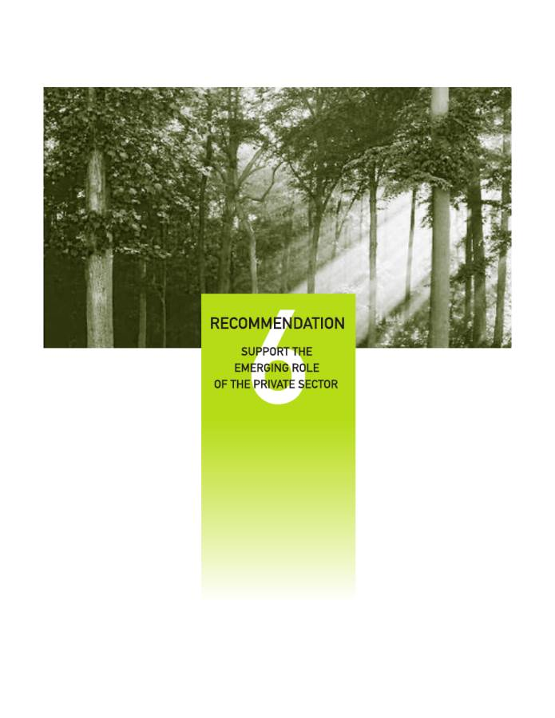
PROTECTING OUR INVESTMENTS, SECURING FUTURE PROGRESS
29
FINDINGS & ANALYSIS
E
cosystem markets are an inno-
vative approach that engages
the private sector in solving
environmental challenges facing
the nation and the world. Over the
past 10 years, through a variety of
regulatory frameworks and volun-
tary private sector standards and
registries, these markets have taken
form. Specifically, markets have
been created to protect wetlands and
endangered species, to reduce carbon
(for its role as a greenhouse gas) and
other airborne pollutants and, most
recently, to use ecosystem markets
to help reduce nutrient and sediment
pollution.
In the simplest of terms, ecosystem
markets allow for a polluter to
purchase pollution reduction credits
on the open market from entities that
reduce pollution or other environmental impacts beyond
a set baseline and create environmental improvements.
A credit equals some measurable and verifiable environ-
mental improvement such that a polluter can purchase
as many credits as needed to offset
pollution it creates, or anticipates
creating, in order to meet either
regulatory requirements or volun-
tary-based objectives.
In general, the ability of an entity
(such as the owner of a forest, farm
or wetland) to create value from
ecosystem services and to sell those
services on the open market requires
three factors. First, there needs to
be a regulatory system in place that
has enforceable limits in permits.
While there are voluntary programs
in place, for a market-based system
to succeed broadly a regulatory
framework that sets clear rules for
investors to follow is needed. Second,
the regulating agency needs to allow
the issuance and use of offset credits
as part of the fair and transparent
regulatory regime. Third, in cases
when a permittee degrades the
system locally, credits should be purchased relatively close
to where the impacts are generated.
Markets created in the Chesapeake region, including
nutrient pollution markets, can support land conservation
Chesapeake Bay Program
federal and state partners and
local governments should send
a strong policy signal and set
precise standards and guidelines
to dramatically expand private
investment in ecosystem markets
to conserve landscapes and reduce
water pollution.
PHO
TO:
M
ar
yland
For
est
by
Da
vid
Bur
ke

30
CONSERVING CHESAPEAKE LANDSCAPES
efforts in a number of ways. The sale of credits on
working landscapes provides an additional income
stream for farmers and landowners helping to ensure
the economic viability of those lands and therefore
their availability for protection. Also, depending on the
strength of the market, investors may seek to purchase,
restore and, in some cases, conserve large tracts of land in
order to enhance those landscapes and create significant
ecosystem services that can be sold in the marketplace.
In certain instances, the ecosystem credits that are
generated also require protection in perpetuity in order
to be certified. This is particularly true for wetland and
habitat conservation banks. Since rural lands offer the
greatest options to reduce a pound of pollution at the
lowest cost, opportunities to improve the ecological health
of such lands should emerge as a target for market-based
solutions.
The beginnings of a whole new sector of natural
resource businesses are developing to promote and
capitalize upon new market-based solutions. A few
start-up nutrient trading firms are operating in Virginia
and Pennsylvania in direct response to the establishment
of nutrient trading programs in those states. Initial
participation in these programs is limited, but there are
opportunities for these programs to grow and expand.
Similar programs are being tested in Maryland as
well. Carbon trading is emerging in the watershed too.
For example, the Nature Conservancy and a private
sector partner, Blue Source, are partnering on a forest
management project in Pennsylvania that sells carbon
offset credits into the voluntary carbon market. These
markets and the businesses that are emerging to serve
them are building on more mature ecosystem markets
focused on wetland and stream mitigation, and habitat
and endangered species protection.
The firms engaged in nutrient trading in the Bay region
are currently seeking government action to set clearer
and more consistent rules for a system of nutrient and
sediment pollution offsets and credits that are needed to
advance cost-effective strategies for pollution control.
Some of these firms participated in the Ecosystem Services
Focus Group as part of this report. These experts empha-
sized that it will take closely coordinated action by federal,
state and local governments, and clear rules and enforce-
ment to support the emergence of these new markets. They
also made it clear that once a coordinated government
framework and sufficient enforcement tools are in place,
government should not interfere in the market other than
to enforce rules and to monitor performance to ensure
ecosystem benefits are achieved. Moreover, government
subsidies provided to stimulate private investment could
have the opposite effect and actually slow down the
creation of a true and robust market and suppress private
investments. Any policies designed to stimulate the market
should be closely vetted with the private sector, land-
owners and others to ensure their success.
Urban stormwater, which has not been given much
attention for credits or offsets to date, may well provide
one of the strongest opportunities for establishing a
robust ecosystem market in the Chesapeake. Under the
next phase of the TMDL program, EPA is beginning to
set requirements and discharge limits on nutrient and
sediment pollution that could serve as a basis for utilizing
offsets. Many management practices for controlling
stormwater in urban areas are very expensive compared
to agricultural practices per pound of pollution removed,
so credits generated by agricultural best practices (above
baseline reductions in loadings) could be traded as cost
effective offsets to urban entities needing to contain
stormwater. This potential market would thus reward
farmers for their nutrient reduction activities, incentivize
permanent protection of lands to fully monetize ecosystem
enhancements and provide an alternative to expensive
containment and treatment of stormwater runoff.
There may be other opportunities to establish stronger
ecosystem service markets in the Chesapeake, but clearly
reform and new ideas are needed to fully leverage private
sector investments that can improve water quality and
support land conservation. Below are suggested actions
that begin to address the barriers that impede ecosystem
markets today.
ACTIONS
■
Set Baselines for Best Management Practices.
The
first step to make a state or regional system of nutrient
pollution credits work effectively is for states and
EPA to set baseline management practices for open
lands, including farms, forests and restorable lands
of ecological value. A system for generating credits
for voluntary actions above baseline could then be
established. The credits should then be available for
purchase by regulated sources, including wastewater
treatment plants and stormwater permittees under
clear rules that encourage development of a market in
credits.
■
Establish a Market Framework.
Federal agencies
and the states should establish a Bay-wide framework
for ecosystem services with clear limits and rules that
provide the market with certainty. This framework
should minimize risks to attract private capital and
build robust ecosystem markets. In appropriate cases,
the rules should specify circumstances that allow use
of offset credits or trades in tributary basins, as long as
PROTECTING OUR INVESTMENTS, SECURING FUTURE PROGRESS
31
suffi cient pollution reduction is accomplished within
every affected watershed. With respect to emerging
water quality markets, the options are few and storm-
water presents a strong opportunity for trades given
the diffi culty and expense of installing stormwater
best management practices and the relatively low cost
of reducing pollution on working lands — farms and
forests. Since environmental enhancements placed on
permanently protected lands provide a level of certainty
to regulators and the market, land conservation should
be factored into the rules and the framework for
ecosystem services.
■
Provide Extra Incentives for Permanent Protection.
When ecosystem service enhancements generate credits
for the market, extra credits should be provided — if
the enhancements are located on permanently protected
land. These lands could be working landscapes,
conservation sites, cultural or historical properties or
even archeological locations. Enhancements that are
protected in perpetuity are easier to track and monitor
for their ecosystem benefi ts and provide greater
certainty for long-term performance. This incentive
provides win-win solutions for both regulators and
private investors.
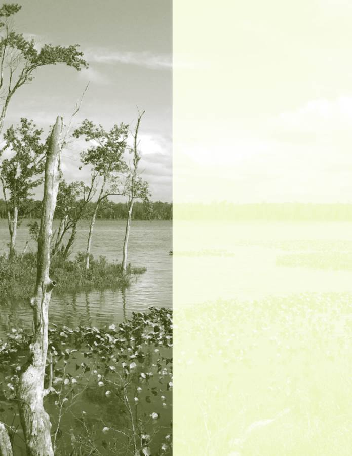
PART 5
State Programs
— Current Best
Programs
And Near-Term
Opportunities
T
he Chesapeake watershed boasts three of the most
successful land conservation programs in the
nation. These three unique funding and conserva-
tion approaches in Maryland, Pennsylvania and Virginia,
together have led to the permanent conservation of 1.24
million acres of land, an area slightly larger than the state
of Delaware. This section briefl y highlights these success
stories along with each of the three states’ other current
land conservation programs. Also offered are concrete
recommendations for expanding upon these programs
with enhanced funding, innovation and resources to meet
the new state and regional goals.
Maryland’s Program Open Space was established
in 1969 and, to date, has conserved more than 5,800
park and conservation area projects. This long-standing
program receives its funding from a real estate transfer
tax, which earmarks one-half of one percent of the
purchase price of a home or property into a dedicated
fund. The program provides fi nancial and technical
assistance to localities for the planning, acquisition and
development of recreational land or open space areas, and
funds land acquisitions and recreational facility develop-
ment at the state level.
Created in 1999, Pennsylvania’s Growing Greener
program has had a variety of long-term, sustaining
funding sources dedicated to conserving working lands
and open spaces and other environmental goals. The
Commonwealth has dedicated over $1.3 billion through
2012 via General Fund appropriations, tipping fees, trans-
fers from other existing funds and bond initiatives. These
funds can be utilized to preserve farmland, forests, wildlife
habitat, and new parklands in perpetuity.
The Virginia Land Preservation Tax Credit Program
was also launched in 1999 and has been the key driver
behind land conservation successes within the Common-
wealth. Now, with the state authorizing the sale of
transferable tax credits, record numbers of acres encom-
passing working farms, forests, recreational lands, scenic
view-sheds, historic sites and natural areas have been
preserved. Through the program, over 514,000 acres with
an appraised value of $2.4 billion have been protected
through approximately 2,400 donations.
The conservation tools and funding mechanisms that
currently exist in Maryland, Pennsylvania and Virginia
represent a signifi cant and strong base, but they are not
suffi cient to achieve the new state and Bay Program
conservation goals confi dently into the future. The
recommendations that follow identify logical, near-term
next steps that will fi rmly place each state on the path to
success.
PHOTO: Voorhees Nature Preserve, Va., by Jennifer Rich, The Nature Conservancy
PART 5
State Programs
— Current Best
Programs
And Near-Term
Opportunities

���������
CURRENT BEST PROGRAMS
■
Substantial Funding Source.
For over 40 years,
Program Open Space has provided a dedicated funding
source for Maryland’s efforts to acquire and protect
over 350,000 acres of open space and recreation areas.
The fund is disbursed to counties based on population
and the amount of real estate transfer revenue
generated in that county. A recent change in the law in
2009 enabled the state to purchase land for less than
fair market value through negotiations with willing
sellers, enabling further leveraging and effective use of
limited resources. Because of this program’s success,
most of Maryland residents now live within 15 minutes
of an open space or recreational area.
■
GreenPrint.
Maryland’s GreenPrint computerized
targeting system provides the technology to identify and
communicate where the state’s most ecologically signifi-
cant lands occur, such as forests, wetlands and riparian
areas. The system provides the basis for prioritizing
land acquisitions to maximize clean air, clean water and
thriving natural areas for wildlife and future genera-
tions. GreenPrint also features an interactive on-line
map available to the public so citizens can learn about
important ecological areas in their communities. This
feature is instrumental in aligning the state’s conserva-
tion partners to collaboratively protect ecologically
valuable lands. Maryland’s land trusts utilize Green-
Print to identify potential parcels for conservation
and direct their outreach to those landowners. Local
governments can also incorporate GreenPrint conser-
vation priorities as a GIS-based data layer to facilitate
comprehensive planning and land use decision making.
■
Rural Land Protection.
Maryland’s Agricultural Land
Preservation Foundation (MALPF), now 33 years
old, is one of the oldest agricultural land protection
programs in the nation. The purpose of the program is
to maintain sufficient land base to support Maryland’s
local supply of food and fiber. Since 1977, MALPF
has protected over 280,000 acres of farm and forest
lands. Counties with a MALPF-certified farmland
preservation program are able to retain a higher
proportion of the state’s agricultural transfer tax
revenues, which are collected for all transfers of land
assessed for agricultural use. Now, certified counties
must establish Priority Preservation Areas (PPAs) that
designate their most productive farmland and pair this
with land use policies that support protection of the
rural land base.
The Maryland Agricultural & Resource-Based
Industry Development Corporation (MARBIDCO)
works in partnership with MALPF to offer landowners
the opportunity to take advantage of Installment
Purchase Agreements (IPA), a conservation easement
payment option that is broken up into installments of
tax-exempt interest payments, delaying assessment of
capital gains taxes and providing greater flexibility for
estate planning. MARBIDCO also works with commer-
cial lenders and MALPF to help young or beginning
farmers to purchase and permanently protect farmland
through the Next Generation Farmland Acquisition
Program.
One of the hallmark features of Maryland’s
preservation efforts is the emphasis on securing best
environmental practices to help support restoration
and protection of the Chesapeake Bay. The Rural
Legacy Program protects working lands that are also
of high ecological significance. The program rewards
landowners with higher payments if they implement
best green practices and incorporate them into their
conservation easements. Green practices include
streamside buffers, soil and water quality plans, and
forest management plans. The Rural Legacy Program,
as of July 2010, has protected over 67,000 acres.
Maryland’s Conservation Reserve Enhancement
Program (CREP) is an easement program developed
in partnership with the U.S. Department of
Agriculture. CREP is focused on protecting water
quality by establishing and permanently protecting
best management practices including streamside
buffers, stabilization of highly erodible soils and
restoration of wetlands. The CREP easement program
is administered by Maryland Department of Natural
Resources and is funded through Program Open Space
funds. As of July 2010, the program had protected
over 4,400 acres.
PROTECTING OUR INVESTMENTS, SECURING FUTURE PROGRESS
33

34
CONSERVING CHESAPEAKE LANDSCAPES
■
Maryland Environmental Trust and Private Land
Trusts.
Since 1967, Maryland Environmental Trust
(MET) has accepted donated conservation easements
protecting over 126,000 acres on over 1,000 proper-
ties. MET has also played a critical role in creating
50 private local land trusts, and continues to provide
vital education and assistance to Maryland’s land
trust community through its Land Trust Assistance
Program. MET also hosts a volunteer easement
monitoring program that assists with monitoring of
protected lands. It is essential for easement holders to
monitor or periodically check on conserved properties
to ensure that conservation restrictions are upheld in
perpetuity. In addition, MET works in partnership with
Maryland’s many land trusts, which have successfully
protected over 150,000 acres, and others to provide
landowners with a variety of innovative conservation
options.
ENHANCEMENT OPPORTUNITIES
■
Climate Change Adaptation and Mitigation.
Maryland’s Climate Change Action Plan calls for the
development of new land protection tools that 1) help
communities deal with rising sea levels, 2) enhance
the ability of Bay, aquatic and terrestrial ecosystems
to withstand or recover from the impacts of climate
change, and 3) mitigate the impacts of climate change
by increasing on-site carbon sequestration. New land
conservation climate change evaluation criteria are
being developed to consider these factors in future land
conservation projects. Tools to assist landowners in
climate-vulnerable areas should include revised ease-
ment agreements and best management or conservation
practices that reflect climate change adaptation and
mitigation strategies.
■
Smart Growth Incentives.
As Maryland steps
forward in the development of PlanMaryland, its
first comprehensive plan for sustainable growth and
development, more attention should be given to
incentives and regulatory controls that have the dual
effect of enhancing sustainable development and
encouraging the conservation of rural landscapes. For
example, more offsets, in the form of land conservation,
could be required for development outside of
Maryland’s Priority Funding Areas (PFAs), while fewer
offsets would be required for development that occurs
within a PFA. In addition, strong rural zoning policies
would provide the most efficient and effective method
of protecting Maryland’s rural landscape.
■
Urban Open Space.
Urban communities need better
tools to create public access to nature, including
trails, parks, gardens and other natural areas. Many
opportunities exist to reclaim vacant urban parcels in
underserved communities. For example, public health
incentives or mitigation opportunities for developers
could be leveraged to improve community connections
to urban open space.
■
Increasing Quantity and Quality of Private Land
Conservation.
Maryland Department of Natural
Resources is conducting an examination of the latest
trends across the country in federal tax benefits and
state incentives for private land conservation and will
make recommendations to increase land protection
based on the most effective programs. Maryland land
trusts, beginning with Maryland Environmental Trust,
are seeking to become accredited by the Land Trust
Accreditation Commission to ensure that the Maryland
land trust community is using the best standards and
practices possible for private conservation. The Land
Trust Accreditation seal is awarded to land trusts that
demonstrate the highest ethical and technical standards
for organizations holding conservation easements.
■
Ecosystem Services.
A framework is needed to inte-
grate regulatory and voluntary ecosystem service
valuation and market incentives across multiple
government agencies and the private sector. A compo-
nent should identify the elements needed to create an
accessible marketplace for selling ecosystem credits
by landowners who protect, restore and enhance their
properties. Tools to support these efforts should include
the development of an additional GreenPrint data layer
showing the ecosystem value of currently degraded
lands if restored.
PROTECTING OUR INVESTMENTS, SECURING FUTURE PROGRESS
35
������������
CURRENT BEST PROGRAMS
■
Substantial Funding Source.
Pennsylvania has
continued to utilize a combination of dedicated taxes,
general fund appropriations and voter-approved
general obligation bonds to fund land conservation
efforts over the past two decades. The most recent bond
initiative was in 2005 (Growing Greener Bond Fund),
which provided $625 million over five years for the
maintenance and protection of the environment, open
space and farmland preservation, watershed protection,
abandoned mine reclamation, acid mine drainage reme-
diation and other environmental initiatives. Of this, the
Farmland Preservation Program received $80 million in
bond funding and the Community Recreation Program
received $27.5 million, with $90 million specified for
open space conservation.
■
Local Taxing Authority.
Since 1996, municipalities
have had the authority to levy a property tax or earned
income tax to establish a fund for the purchase of open
space. The tax may be raised on residents only and
must be approved by referendum. In the Chesapeake
Bay watershed, 31 initiatives have been enacted to date,
with almost $190 million approved for conservation
funding.
■
Local Incentives.
The Community Conservation
Partnerships Program (C2P2) requires local partners
to provide matching funds in order to receive a state
grant for land conservation. C2P2 is a combination of
several funding sources, including Keystone Recreation,
Park and Conservation Fund, Watershed Protection
Act (Growing Greener), Act 68 Snowmobile and ATV
Trails Fund and the federal Land and Water Conserva-
tion Fund. Between 2000 and 2010 the Commonwealth
provided more than $86.4 million in funding to
conserve 46,173 acres in the Chesapeake Bay Water-
shed. This state funding leveraged over $192 million in
partnership funds.
Pennsylvania’s Farmland Preservation Program has
protected more than 435,000 acres through conserva-
tion easements since 1989, at a cost of more than $740
million in state funds. The Program has prompted
57 counties to create local farmland preservation
programs, leveraging an additional $340 million.
■
Transfer of Development Rights.
Transfer of Devel-
opment Rights (TDR) is a zoning technique used to
permanently protect farmland and other natural and
cultural resources. TDR allows the redirecting of devel-
opment that would otherwise occur on these resource
lands to areas planned to accommodate growth and
development. TDR programs enable landowners within
valuable agricultural, natural and cultural resource
areas to be financially compensated for choosing not to
develop their lands. The TDR tool is similar to Penn-
sylvania’s county agricultural conservation easement
purchase programs, except TDR allows the purchased
development rights to be transferred rather than retired
as required under the agricultural easement scenario.
Pennsylvania’s TDR programs have focused largely
on the protection of farmland, although historic and
natural resources have also been permanently protected
using the TDR tool. All but one of the 20 active TDR
programs operates in southeastern and south central
Pennsylvania where community consensus for farmland
preservation is a high priority. TDR can be applied to
practically any scenario where permanent land conser-
vation and growth management are desired outcomes.
■
Growing Greener: Conservation by Design.
This
program helps municipalities and developers build new
housing and businesses while protecting important
natural and cultural resources. With straightforward
changes to municipal ordinances, new subdivisions can
leave half (or more) of buildable land as open space
while being fair to those seeking to develop their land.
Municipalities that have adopted rigorous versions
of the ordinances are preserving an average of 62
percent of the land each time a residential property
is developed. In many of the resulting conservation
subdivisions, developers have donated land to the
municipality, at no public cost, greatly increasing local
capacity to provide greenways and parks to residents.
■
Conserving Special Places (Strategic Investments).
The Department of Conservation and Natural
36
CONSERVING CHESAPEAKE LANDSCAPES
��������
�
Resources (DCNR) has developed a sophisticated
approach to land acquisition investments based on four
criteria: protecting existing public resources; ecosystem
and habitat conservation; water resource protection
and conservation; and public recreation and open
space protection, coupled with conservation landscape
priorities. Since 2002, DCNR has acquired or helped to
acquire over 130,000 acres statewide.
ENHANCEMENT OPPORTUNITIES
■
Substantial Funding Source.
From surveys, poll
results and voting patterns, it is evident that most Penn-
sylvania citizens strongly support the conservation of
lands and special places. The Growing Greener funding
sources (Environmental Stewardship funding and 2005
Growing Greener Bond Fund) are nearly gone. Yet
there is more work to be done. A coalition has been
formed to encourage passage of additional funding
($200 million annually) to continue environmental,
conservation and recreation work.
■
Local Taxing Authority.
The taxing authority that has
been authorized for municipalities to purchase open
space should be expanded to allow counties to levy a
property tax for acquisition of open space.
■
Local Incentives.
To increase the number of municipal-
ities (and potentially counties) that have adopted local
tax measures for land conservation, the state should
consider establishing a revolving loan fund that would
be available to local governments that adopt an open
space tax measure.
■
Public/Private Partnership.
There is currently no
quasi-state organization that helps facilitate land
conservation donations across the Commonwealth.
Creating such an organization would help bolster the
efforts of local land trusts and help to conserve farm-
land that might not meet the Farmland Preservation
Program’s particular standards and targeted geographic
scope. In addition, to facilitate the protection of forest
lands while keeping them under private ownership, a
revolving loan fund could be established as part of a
state Forest Legacy Program. Such a fund would help
private conservation groups protect large tracts of
land by assembling small parcels and reselling them
to timber companies, with a conservation easement
requiring responsible management of the property.
■
Tax Credits.
In order to encourage the donation of
land or conservation easements on land, Pennsyl-
vania should consider adopting an income tax credit
program.
CURRENT BEST PROGRAMS
■
Tax Credits.
Virginia’s Land Preservation Tax Credit
Program was created to incentivize land conservation
by providing an income tax credit of up to 50 percent
of the value of conservation easements placed on land
in the Commonwealth. The law was later amended to
lower the allowable credit to 40 percent of the value
of a donation and to authorize the transfer of credits,
so they can be sold to other taxpayers. The program
allows taxpayers to use up to $50,000 of the credit
per year for 13 years. Unused credits may be sold,
allowing individuals with little or no Virginia income
tax burden to take advantage of this benefit. To be
eligible for tax credits, the easement must qualify as
a charitable deduction under federal tax regulations
and meet additional requirements under the Virginia
Land Conservation Incentives Act. The Department of
Conservation and Recreation (DCR) must verify the
conservation value for those donations resulting in a
tax credit request of $1 million or more. To determine
conservation value, DCR utilizes criteria adopted by
the Virginia Land Conservation Foundation Board. An
annual cap of $100 million was established in 2006
for the program with annual adjustments dependent
upon the consumer price index. This program has
been extremely successful, and through mid-2010 had
enabled the protection of approximately 514,000 acres.
■
State Incentives.
The Virginia Land Conservation
Foundation (VLCF) provides grants to state agencies
and matching grants to local governments and land
trusts across the state to acquire land, open space and
conservation easements. Funding for the program

PROTECTING OUR INVESTMENTS, SECURING FUTURE PROGRESS
37
has been variable. Since its inception in 2000, there
have been six grant rounds, and over the course of the
program, grant requests have exceeded available funds
by a factor of three. In addition to VLCF, the Virginia
Department of Agriculture and Consumer Services’
Office of Farmland Preservation, which was first
funded in 2007, provides matching grants to localities
that have qualifying Purchase of Development Rights
programs. Virginia’s Department of Historic Resources
also provides grant funding for battlefield protection.
■
Virginia Outdoors Foundation and Private Land
Trusts.
The Virginia Outdoors Foundation (VOF), a
public body created in 1966, has helped facilitate the
donation of conservation easements on thousands of
acres of land, and works in partnership with land trusts
and other nonprofit conservation groups to protect
land while keeping it in private ownership. VOF, which
holds approximately 75 percent of all conservation
easements in the Commonwealth, receives funding
from VLCF and from the General Assembly to pay
the costs associated with these transactions and some-
times to purchase easements. Between 1968 and 1999,
VOF averaged about 4,700 acres of easements yearly,
but after Virginia’s land preservation tax credits were
enacted, VOF’s yearly average has increased to 44,920
acres — almost a ten-fold increase. VOF now holds
more conservation easements than any public land trust
in the nation. In the past decade, land trusts in Virginia
have grown in both numbers and capacity and have
become partners in the work of preserving Virginia’s
land-based resources. Virginia’s United Land Trusts, a
statewide coalition, was created to foster this growth in
private land trust capacity.
■
Land Conservation Loan Program.
The Virginia Water
Facilities Revolving Fund makes low-interest loans
available to protect tracts of land that maintain or
improve water quality and prevent pollution of state
waters. These funds can be used as bridge loans that
allow organizations to mobilize quickly when land is at
immediate risk from development.
■
Identifying Priority Areas.
The Virginia Land Conser-
vation Needs Assessment is a flexible mapping tool for
integrating and coordinating different conservation
interests. Issue-specific data sets can be weighted and
overlaid to reflect the needs and concerns of a variety
of conservation interests by using this geographic
information systems (GIS) tool to model and map land
conservation priorities, such as: prime agricultural
lands, cultural and historic resources, un-fragmented
natural habitats, sustainable forestry, outdoor recre-
ation, natural heritage resources, vulnerability, and
water quality improvement. The maps that result high-
light areas where conservation dollars can be targeted
for the highest benefit.
ENHANCEMENT OPPORTUNITIES
■
A Stable Funding Source.
Establishment of a dedicated
funding source or stable ongoing general fund appro-
priations are needed to provide more certainty of future
funding.
■
State Tax Credits.
Virginia’s land preservation tax
credit is a key factor in many landowner decisions to
donate easements to public bodies and private land
trusts. Increasing the annual cap well beyond $100
million and re-establishing the allowable credit at 50
percent of the value of the donation would help to
ensure the continued success of the land preservation
tax credit program and enable meeting the Governor’s
new 400,000-acre land conservation goal.
■
Land Conservation Bond.
As the economy improves,
the Governor and General Assembly may wish to
consider another state land-conservation bond. This
would provide the necessary funding to enable the
Commonwealth along with the land trust community to
protect high-quality, strategic lands with great resource
value for Virginia.
■
Encouraging Local Action.
In Virginia, municipalities
have broad local taxing authority for land conserva-
tion. The City of Virginia Beach, for example, has
used a dedicated property tax for the acquisition of
conservation easements through the City’s Purchase
of Development Rights program. In addition, local
governments are now authorized to create local service
districts that have the authority to levy property taxes
to fund the purchase of conservation easements. This
mechanism can provide greater stability of funding
levels while allowing localities the flexibility to raise or
lower the tax rate according to changing circumstances.
Fauquier County has used that authority to create
such a service district over the whole county, but other
localities could define service districts in areas identified
in their comprehensive plan to remain rural or green
space. Encouraging localities to exercise their authori-
ties in these ways could provide another opportunity
for locally based land conservation.

38
CONSERVING CHESAPEAKE LANDSCAPES
ADVISORY PANEL
The Honorable Thomas McLain “Mac” Middleton,
Senate of Maryland and CBC Chair
The Honorable Michael W. Brubaker, Senate of
Pennsylvania and CBC Vice-Chair
The Honorable Mary Margaret Whipple, Senate of
Virginia and CBC Vice-Chair
Mark Bryer, Chair, Goal Team 4, Chesapeake Bay
Program
Cindy Dunn, Pa. Dept. of Conservation & Natural
Resources
Meredith Lathbury, Md. Dept. of Natural Resources
John Maounis, National Park Service
Patrick Noonan, The Conservation Fund
Sarah Richardson, Va. Dept. of Conservation &
Recreation
Nikki Rovner, The Nature Conservancy
Jon Scholl, American Farmland Trust
Al Todd, USDA Office of Environmental Markets
Jeb Wilkinson, Jr., Va. Dept. of Conservation &
Recreation
FOCUS GROUPS
WORKING LANDS
Jim Baird, American Farmland Trust
Diane Chasse, Md. Agricultural Land Preservation
Foundation
Sally Claggett, U.S. Forest Service
James Conrad, Md. Agricultural Land Preservation
Foundation
Rob Farrell, Va. Dept. of Forestry
Craig Highfield, Forestry for the Bay, Alliance for the
Chesapeake Bay
Mike Kane, Piedmont Environmental Council
Karen Martynick, Lancaster Farmland Trust
Sara Nicholas, Pa. Dept. of Conservation & Natural
Resources
Dan Rider, Md. Dept. of Natural Resources
Mark Rose, USDA Natural Resources Conservation
Service
Kevin Schmidt, Va. Dept. of Agriculture & Consumer
Services
Doug Wolfgang, Pa. Dept. of Agriculture
ECOSYSTEM SERVICES
John Campagna, Restore Capital
Joe Carroll, Cynergy-Global
Ned Carter, Blueline Conservation Incentives
Christine Conn, Md. Dept. of Natural Resources
Nick Dilks, Ecosystem Investment Partners
Brent Fults, Chesapeake Bay Nutrient Land Trust
Wendy Hershey, GreenVest, LLC
Dylan Jenkins, The Nature Conservancy
George Kelly, Environmental Banc & Exchange
Sean McGuire, Md. Dept. of Natural Resources
Jay Norman, Blueline Conservation Incentives
Susan Payne, Md. Dept. of Agriculture
Eric Sprague, Pinchot Institute and BayBank
Eric Swanson, World Wildlife Fund
Al Todd, USDA Office of Environmental Markets
LOCAL GOVERNMENT
Bill Amoss, Harford County, Md.
The Hon. Russ Brinsfield, Mayor, Vienna, Md.
Ellen Dayhoff, Adams County, Pa.
Jeff Everett, Carroll County, Md.
Rick Keister, Chesapeake Bay Program Local Government
Advisory Committee (LGAC)
Mary Ann Lisanti, Harford County, Md. and LGAC
Jackie Rickards, Middle Peninsula Planning District
Commission, Va.
Megan Lehman, Lycoming County, Pa.
Dan Zimmerman, Warwick Township, Pa.
CHESAPEAKE BAY PROGRAM
MODELING & DATA TEAM
Rich Batiuk, U.S. Environmental Protection Agency
Peter Claggett, U.S. Geological Survey
Sally Claggett, U.S. Forest Service
Jeff Sweeney, University of Maryland
Our Advisors
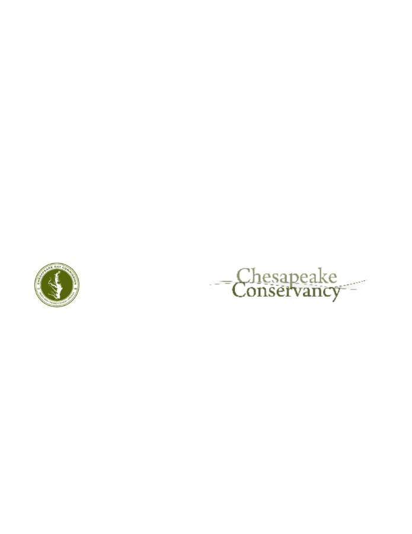
PROTECTING OUR INVESTMENTS, SECURING FUTURE PROGRESS
39
ABOUT THE CHESAPEAKE
BAY COMMISSION
For three decades the Chesapeake Bay Commission
has been a leader in the effort to restore the Chesa-
peake Bay. The tri-state legislative commission works
on a broad array of environmental policies including
promoting land conservation and land management
practices to benefit water quality. The member states,
Maryland, Pennsylvania and Virginia are now national
leaders in land conservation because of their innovative
and successful efforts to achieve permanent protection
of over 20 percent of their land in the Bay watershed. In
recognition and support of the economic and environ-
mental values associated with land conservation, the
Commission partnered with the Chesapeake Conser-
vancy to publish this report of policy recommendations.
Identifying and putting into place the most effective and
targeted public policy options will help to ensure new
land conservation goals are met by the states and the
Chesapeake region as a whole.
ABOUT THE CHESAPEAKE
CONSERVANCY
Chesapeake Conservancy is a non-profit organization
whose mission is to ensure conservation, stewardship,
access and enjoyment of the Chesapeake’s iconic land-
scapes, great rivers and cultural and historic assets. The
Conservancy advances this mission through education,
direct action, marshaling new resources and forging
partnerships with governments, businesses, public-
interest groups and citizens. The principal focus of the
Conservancy is the implementation of: the John Smith
Chesapeake National Historic Trail; the Chesapeake
Gateways and Watertrails Network; and a Chesapeake
Treasured Landscape Initiative. The Conservancy
believes that by helping educate citizens about the
Chesapeake Bay and by providing new opportunities
for improved public access, tourism, recreation and
cooperative conservation of its treasured landscapes
and ecosystems, we can create a lasting ecological and
cultural legacy for the Chesapeake Bay.
Chesapeake Bay Commission
Policy for the Bay
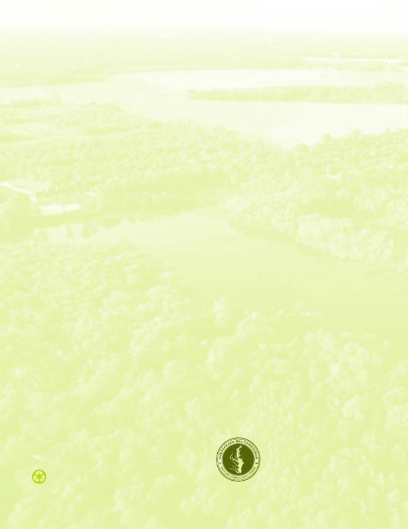
CHESAPEAKE BAY COMMISSION
www.chesbay.virginia.gov
HEADQUARTERS & MARYLAND OFFICE
60 West Street, Suite 406
Annapolis, Maryland 21401
Phone: 410-263-3420
E-mail: aswanson@chesbay.us
PENNSYLVANIA OFFICE
c/o Senate of Pennsylvania
Room G-05 North Offi ce Building
Harrisburg, Pennsylvania 17120
Phone: 717-772-3651
E-mail: mraub@chesbay.us
VIRGINIA OFFICE
General Assembly Building
910 Capitol Street, Room 270
Richmond, Virginia 23219
Phone: 804-786-4849
E-mail: sbulbulkaya@chesbay.us
CHESAPEAKE CONSERVANCY
www.chesapeakeconservancy.org
410 Severn Avenue, Suite 405
Annapolis, Maryland, 21403
Phone: 443-321-3610
E-mail: info@chesapeakeconservancy.org
PROJECT TEAM
CHESAPEAKE BAY COMMISSION
Ann Swanson, Executive Director
Bevin Buchheister, Maryland Director
Suzan Bulbulkaya, Virginia Director
Marel Raub, Pennsylvania Director
Bill Matuszeski, Senior Advisor
CHESAPEAKE CONSERVANCY
David O’Neill, Past President
David Burke, Senior Advisor
Joel Dunn, Conservation Advisor
DESIGN
Peter M. Gentile, petermichael associates
COVER PHOTO
Upper Nanticoke, Md., by David Harp,
Chesapeake Photos
Contact Us
Chesapeake Bay Commission
Policy for the Bay
Printed on recycled paper
40
CONSERVING CHESAPEAKE LANDSCAPES
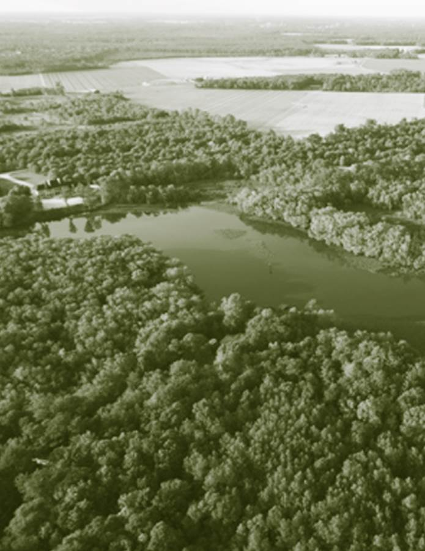
CHESAPEAKE BAY COMMISSION · WWW.CHESBAY.VIRGINIA.GOV
CHESAPEAKE CONSERVANCY · WWW.CHESAPEAKECONSERVANCY.ORG